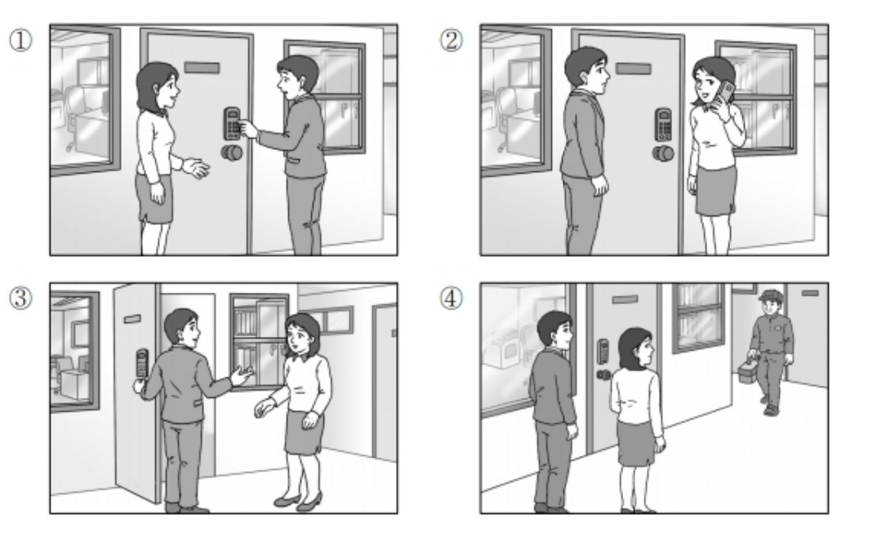
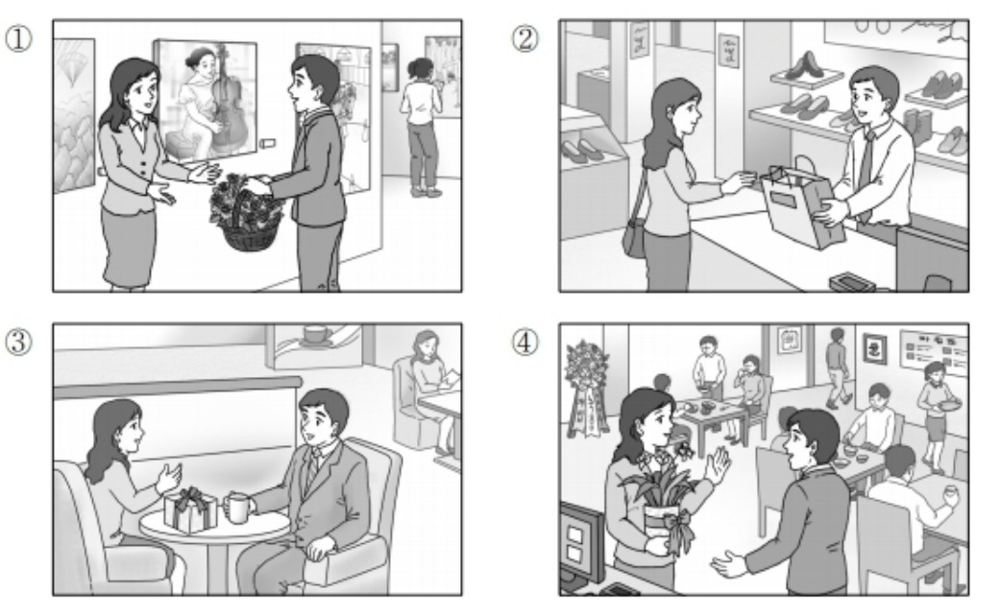
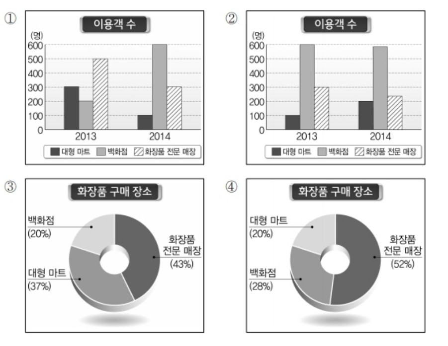

👨 남자: 제가 한번 해 볼게요. 정말 안 되네요.
👩 여자: 고장 났나 봐요. 제가 가서 경비 아저씨 불러 올게요.
👨 Nam: Để tôi thử xem sao. Thật sự không được này.
👩 Nữ: Chắc hỏng rồi. Để tôi đi gọi chú bảo vệ đến xem sao.
🎯 Phân tích đáp án
Tại sao chọn ①? Trong đoạn hội thoại, người nữ đang thắc mắc vì sao bấm đúng mật khẩu (비밀번호 맞게 눌렀는데) mà cửa không mở. Người nam tiến lại gần và bảo "Để tôi thử xem sao" (제가 한번 해 볼게요). Bức tranh số 1 mô tả chính xác cảnh người nữ đứng lùi lại và người nam đang đưa tay ra thao tác bấm thử mật khẩu trên ổ khóa điện tử của cửa ra vào.
- Hình 2 sai vì người nữ đang cầm điện thoại gọi điện, trong khi người nam chỉ đứng nhìn chứ không hề có động tác "thử bấm mật khẩu".
- Hình 3 sai vì cửa đã được mở ra và hai người đang đứng nói chuyện vui vẻ, hoàn toàn trái ngược với tình huống "cửa không mở được" (왜 안 열리지?).
- Hình 4 sai vì trong hình đã có sự xuất hiện của chú bảo vệ xách hộp đồ nghề đi tới. Tuy nhiên trong kịch bản, cô gái mới chỉ định đi gọi (불러 올게요) chứ chú bảo vệ chưa hề xuất hiện.

👩 여자: 뭘 이런 거까지 준비했어요. 바쁘신데 와 줘서 고마워요.
👨 남자: 와, 손님이 많네요. 가게도 꽤 크고요.
👩 Nữ: Anh cất công chuẩn bị mấy thứ này làm gì. Anh bận rộn thế mà vẫn đến chung vui là tôi cảm ơn lắm rồi.
👨 Nam: Chà, đông khách thật đấy. Cửa hàng cũng khá lớn nữa.
🎯 Phân tích đáp án
Tại sao chọn ④? Thông qua bối cảnh giao tiếp, ta có thể thấy người nam đến dự lễ khai trương cửa hàng (가게) của người nữ. Anh ta chúc mừng và tận tay trao một món quà (이거 받으세요), đồng thời trầm trồ vì quán đang có rất đông khách (손님이 많네요). Bức tranh số 4 lột tả hoàn hảo không gian của một quán ăn đang tấp nập khách khứa, trong đó người nam đang trao lẵng hoa chúc mừng cho người nữ (cô chủ quán).
- Hình 1 sai vì đây là bối cảnh của một phòng triển lãm tranh, không phải không gian kinh doanh của một cửa hàng (가게).
- Hình 2 sai vì đây là hình ảnh giao dịch mua bán tại tiệm giày (nhân viên đưa túi đồ cho khách), hoàn toàn không có yếu tố "chúc mừng" (축하해요) hay trao quà khai trương.
- Hình 3 sai vì cả hai đang ngồi đối diện nhau uống cà phê tâm sự và tặng quà, không khớp với bối cảnh cửa tiệm đang có đông đúc khách vãng lai.

🎯 Phân tích đáp án
Tại sao chọn ④? Bản tin báo cáo về phân bố các địa điểm mua sắm mỹ phẩm. Thông tin then chốt là "Cửa hàng chuyên bán mỹ phẩm (화장품 전문 매장) chiếm tỷ lệ cao nhất", tiếp theo là Bách hóa (백화점) và Siêu thị lớn (대형 마트). Nhìn vào biểu đồ tròn số 4, ta thấy sự phân bổ hoàn toàn khớp với thứ tự này: Cửa hàng chuyên mỹ phẩm (52% - Lớn nhất) > Bách hóa (28% - Thứ 2) > Siêu thị lớn (20% - Thứ 3).
- Biểu đồ 1 & 2 sai vì đây là biểu đồ hình cột so sánh lượng khách giữa năm 2013 và 2014. Đề bài nhấn mạnh "Bách hóa giảm mạnh so với năm ngoái" nhưng ở biểu đồ 2, lượng khách bách hóa (백화점) năm 2014 lại cao hơn năm 2013, ngược với dữ liệu âm thanh.
- Biểu đồ 3 sai vì tỷ lệ của Siêu thị lớn (대형 마트 37%) lại lớn hơn Bách hóa (백화점 20%), trong khi bản tin nói rõ "Bách hóa và Siêu thị lớn nối gót theo sau" (tức Bách hóa phải xếp trên Siêu thị lớn).
👩 여자: 그래? 몇 시 시작인데? 난 3시까지 수업이 있어서.
👨 남자: _____________________________
👩 Nữ: Thế á? Mấy giờ bắt đầu vậy? Tớ có tiết học đến tận 3 giờ cơ.
👨 Nam: ( Học xong rồi đi cũng chưa muộn đâu. )
- ① Thật may vì đã đến đúng giờ.
- ② Cậu học xong rồi đi cũng chưa muộn đâu.
- ③ Buổi thuyết giảng thì bất cứ ai cũng có thể nghe được.
- ④ Tớ không biết sẽ mất bao lâu nữa.
🎯 Phân tích đáp án
Tại sao chọn ②? Người nữ đang tỏ ra luyến tiếc và lo lắng vì mình bị vướng lịch học đến tận 3 giờ (난 3시까지 수업이 있어서), sợ không kịp tham dự buổi thuyết giảng. Phản ứng tự nhiên và mang tính chất trấn an, động viên nhất từ người nam lúc này là "수업 끝나고 가도 늦지 않아" (Cậu học xong rồi đi cũng chưa muộn đâu).
- ① Sai vì sự kiện chưa hề diễn ra, cả hai chưa đến địa điểm tổ chức nên không thể thốt lên câu "Thật may vì đã đến đúng giờ" được.
- ③ Sai vì điều người nữ quan tâm là "vướng bận lịch học không đi được", chứ cô ấy không thắc mắc về tiêu chuẩn hay đối tượng tham gia để mà người nam trả lời "bất cứ ai cũng có thể nghe".
- ④ Sai vì câu trả lời "không biết mất bao lâu" hoàn toàn lạc đề và không giải quyết được nỗi trăn trở về thời gian bắt đầu của người nữ.
👩 여자: 네. 꼭 해 보고 싶었던 일이라 휴가를 냈어요.
👨 남자: _____________________________
👩 Nữ: Vâng. Vì đó là việc mà tôi đã luôn muốn làm thử nên tôi đã xin nghỉ phép để đi.
👨 Nam: ( Tôi không biết là cô lại tha thiết muốn làm việc đó đến vậy đấy. )
- ① Vì là cơ hội tốt nên cô hãy nghỉ ngơi cho khỏe rồi về nhé.
- ② Tôi không biết là cô lại tha thiết muốn làm việc đó đến vậy đấy.
- ③ Chắc cô bận đến mức phải đặc biệt xin nghỉ phép cơ đấy.
- ④ Dù sao thì cũng đã quyết định đi rồi nên cô hãy làm thật tốt nhé.
🎯 Phân tích đáp án
Tại sao chọn ②? Người nữ bộc lộ khao khát cháy bỏng: "Đó là việc tôi LÚC NÀO CŨNG MUỐN THỬ (꼭 해 보고 싶었던) đến mức sẵn sàng xin cả nghỉ phép". Việc người nam bày tỏ sự bất ngờ ngạc nhiên trước mức độ đam mê này của cô gái: "그렇게 하고 싶어하는 줄 몰랐어요" (Tôi không biết là cô lại khao khát muốn làm đến vậy đấy) là phản xạ vô cùng tự nhiên trong giao tiếp.
- ① Sai vì người nữ đang đi "hoạt động tình nguyện vất vả", chứ không phải xách vali đi du lịch nghỉ dưỡng mà lại chúc "nghỉ ngơi cho khỏe" (잘 쉬고 와요).
- ③ Sai vì suy luận logic bị ngược hoàn toàn. Cô ấy xin nghỉ phép vì QUÁ ĐAM MÊ ĐI TÌNH NGUYỆN, chứ không phải xin nghỉ phép vì... công việc quá bận rộn.
- ④ Sai vì cấu trúc "그래도... (Dù sao thì...)" thường được dùng để an ủi động viên khi một người đang phải làm việc gì đó một cách miễn cưỡng, bắt buộc. Nhưng ở đây, cô gái đang cực kỳ tự nguyện và hào hứng.
👨 남자: 한 번도 안 입었으니까 한번 물어봐.
👩 여자: _____________________________
👨 Nam: Vì cậu chưa mặc lần nào nên cứ thử hỏi người ta xem sao.
👩 Nữ: ( Nếu họ chịu đổi cho thì tốt quá. )
- ① Nếu họ chịu đổi cho thì tốt quá.
- ② Chắc không cần thiết phải hỏi đâu.
- ③ Không chừng là đã bị quá ngày rồi.
- ④ Đáng lẽ ra tớ nên mặc thử sớm hơn.
🎯 Phân tích đáp án
Tại sao chọn ①? Khi người nữ hoang mang vì quá hạn đổi trả, người nam đã đưa ra lời khuyên đầy tính khích lệ: "Cứ thử hỏi xem sao" (한번 물어봐). Đáp lại lời động viên đó, người nữ bộc lộ sự hy vọng tích cực: "바꿔 주면 좋겠는데" (Nếu người ta đổi cho thì tốt quá) là diễn biến tiếp nối hoàn toàn hợp tình hợp lý.
- ② Sai vì thái độ buông xuôi "không cần phải hỏi" (물어볼 필요는 없겠지) là một gáo nước lạnh tạt thẳng vào lời khuyên "hãy hỏi thử đi" của người nam.
- ③ Sai vì ngay từ câu nói đầu tiên, cô gái đã KHẲNG ĐỊNH CHẮC NỊCH là đã quá hạn (기간이 지났는데), nên không thể dùng từ phỏng đoán "không chừng đã qua ngày" (지났을지 몰라) ở đây được nữa.
- ④ Sai vì hiện tại trọng tâm của cuộc hội thoại đang xoay quanh vấn đề "Có xin đổi trả được không?", chứ không phải là lúc ngồi ân hận ăn năn về việc chưa kịp mặc thử.
👩 여자: 네, 한 달쯤 됐는데요. 아침에 여유가 있어서 좋은 것 같아요.
👨 남자: _____________________________
👩 Nữ: Vâng, tính ra cũng được khoảng một tháng rồi đấy. Sáng ra có dư dả thời gian rảnh rỗi nên tôi thấy tuyệt lắm.
👨 Nam: ( Cô cho tôi xin số điện thoại liên lạc của quán đó với. )
- ① Chắc tôi cũng phải đi đến cửa hàng mua mới được.
- ② Cô cho tôi xin số điện thoại liên lạc của quán đó với.
- ③ Để chuẩn bị bữa sáng chắc cô bận rộn lắm.
- ④ Được ăn trong lúc làm việc thì thật là thích.
🎯 Phân tích đáp án
Tại sao chọn ②? Người nữ review và ca ngợi dịch vụ giao đồ ăn sáng rất tốt vì giúp buổi sáng thảnh thơi nhàn hạ hơn. Bị hấp dẫn bởi sự tiện lợi tuyệt vời đó, người nam nảy sinh ý định dùng thử và ngỏ lời: "그 집 연락처 좀 알려 주세요" (Cô cho tôi xin số điện thoại liên lạc của chỗ đó với) là một diễn biến logic tự nhiên nhất.
- ① Sai vì cả hai đang bàn luận khen ngợi về sự thần thánh của dịch vụ "giao hàng tận nơi" (배달해 먹어요), tự dưng người nam lại bảo muốn lóc cóc "tự đi ra cửa hàng mua" (가게에 가서 사야겠어요) thì quả là ngược đời.
- ③ Sai vì người nữ đã khẳng định chắc nịch là nhờ gọi đồ ăn nên buổi sáng "cực kỳ thảnh thơi" (여유가 있어서), hoàn toàn không có chuyện vất vả tất bật chuẩn bị.
- ④ Sai vì không có bất kỳ chi tiết nào trong đoạn hội thoại đề cập đến bối cảnh "vừa ăn vừa làm việc".
👨 남자: 수고했어요, 지영 씨. 그런데 전시회 초대 손님 명단은 다 정리되어 가나요?
👩 여자: _____________________________
👨 Nam: Vất vả cho cô rồi, Ji-yeong. Thế nhưng danh sách khách mời dự triển lãm đã được tổng hợp xong xuôi hết chưa?
👩 Nữ: ( Chắc là sẽ cần phải mất thêm vài ngày nữa ạ. )
- ① Có lẽ sẽ mất thêm vài ngày nữa ạ.
- ② Triển lãm đã chính thức bắt đầu rồi ạ.
- ③ Tôi dự định vào tháng sau mới tiến hành mời ạ.
- ④ Có vẻ khách sẽ đến muộn hơn so với kế hoạch dự kiến.
🎯 Phân tích đáp án
Tại sao chọn ①? Sếp nam đang trực tiếp kiểm tra tiến độ hoàn thành của danh sách khách mời (초대 손님 명단은 다 정리되어 가나요? - Đã làm xong chưa?). Người nữ (nhân viên) phản hồi lại chính xác về mặt tiến độ thời gian: "며칠 더 걸릴 것 같습니다" (Dạ chắc là sẽ mất thêm vài ngày nữa để làm xong ạ) là một câu báo cáo công việc hoàn toàn chuẩn mực và bám sát câu hỏi.
- ② Sai vì triển lãm dự kiến diễn ra vào THÁNG SAU (다음 달에 열리는), không thể nói là đã bắt đầu ngay lúc này được.
- ③ Sai vì trả lời lạc đề. Sếp đang hối thúc hỏi tiến độ LẬP DANH SÁCH (để chuẩn bị in thiệp), chứ sếp không hỏi thời điểm khi nào thì phát thiệp mời.
- ④ Sai vì hai người đang bàn chuyện chạy deadline lập danh sách, không bàn về chuyện khách mời sẽ tới trễ hay tới sớm.
👨 남자: 음, 일단 메일로 보내 봐. 그런데 언제까지 해야 되는데?
👩 여자: 과제 제출이 다음 주 월요일이니까 토요일까지 보내 줘.
👨 남자: 알았어. 그럼 메일 확인하고 전화할게.
👨 Nam: Ừm, trước tiên cậu cứ gửi qua email cho tớ đi. Nhưng mà hạn chót là khi nào thế?
👩 Nữ: Thời hạn nộp bài là thứ Hai tuần sau, nên cậu hãy ráng gửi lại cho tớ trước thứ Bảy nhé.
👨 Nam: Tớ biết rồi. Vậy tớ sẽ check email rồi gọi điện cho cậu nhé.
- ① Nhận lại bài tập đã được sửa xong từ người nam.
- ② Gọi điện thoại để nhờ vả người nam dịch bài giúp mình.
- ③ Gửi bản thảo bài tập cho người nam thông qua email.
- ④ Gọi điện cho người nam để hỏi về ngày nộp bài.
🎯 Phân tích đáp án
Tại sao chọn ③? Đề bài yêu cầu tìm "Hành động TIẾP THEO của người Nữ". Chàng trai yêu cầu: "일단 메일로 보내 봐" (Trước tiên cậu cứ gửi qua mail cho tớ đi). Sau đó nữ chốt hạ deadline và nam đồng ý sẽ "kiểm tra mail" (메일 확인하고). Vậy hành động ngay lập tức tiếp theo mà cô gái bắt buộc phải làm là gửi tài liệu đính kèm qua email cho người nam (이메일로 과제를 보낸다) để anh ta có cái mà sửa.
- ① Sai vì người nam mới chuẩn bị nhận bài để sửa, anh ta chưa làm xong nên cô gái chưa thể "Nhận lại bài" (받는다) lúc này được.
- ② Sai vì cô gái ĐÃ VÀ ĐANG NHỜ VẢ TRỰC TIẾP LÚC NÀY RỒI, không cần cúp máy xong lại đi gọi điện nhờ vả lần nữa. Việc gọi điện sau này là trách nhiệm của người nam (전화할게).
- ④ Sai vì cô gái CHÍNH LÀ NGƯỜI CHỦ ĐỘNG BIẾT VÀ THÔNG BÁO ngày nộp bài là Thứ 2 tuần sau (제출이 다음 주 월요일이니까). Cô ấy không hề mù mờ để mà phải đi hỏi người nam.
👨 남자: 아, 그렇습니까? 혹시 우편함은 확인하셨나요? 어제 넣어 드렸는데요.
👩 여자: 봤는데 없더라고요. 지금 관리사무소에 가면 받을 수 있나요?
👨 남자: 네, 오시면 바로 재발급해 드리겠습니다.
👨 Nam: À, vậy sao ạ? Không biết chị đã kiểm tra hòm thư chưa? Hôm qua chúng tôi đã bỏ vào đó rồi mà.
👩 Nữ: Tôi xem rồi nhưng không có. Bây giờ tôi sang văn phòng quản lý thì có lấy được không?
👨 Nam: Vâng, chị cứ đến đây chúng tôi sẽ in cấp lại ngay cho chị.
- ① Gọi điện thoại cho văn phòng để nhận giấy báo.
- ② Đi kiểm tra hòm thư xem có giấy báo bị kẹt trong đó không.
- ③ Di chuyển đến văn phòng quản lý để trực tiếp lấy giấy báo.
- ④ Đích thân nhét tờ giấy báo phí quản lý vào trong hòm thư.
🎯 Phân tích đáp án
Tại sao chọn ③? Đề bài yêu cầu tìm "Hành động TIẾP THEO của người Nữ". Khi kiểm tra hòm thư nhưng không thấy, cô gái đã chủ động đề xuất cách giải quyết: "지금 관리사무소에 가면 받을 수 있나요?" (Bây giờ tôi đi sang văn phòng thì lấy được không?). Nhân viên nam gật đầu: "오시면 재발급해 드리겠습니다" (Chị đến thì tôi cấp lại). Vậy hành động ngay tức khắc tiếp theo của cô là xách chân đi sang văn phòng quản lý (관리사무소에 간다) để lấy giấy báo.
- ① Sai vì hiện tại cô ấy ĐANG TRONG CUỘC GỌI ĐIỆN VỚI VĂN PHÒNG (관리사무소지요?) rồi, việc tiếp theo là di chuyển xác phàm đến lấy chứ không phải dập máy xong lại gọi điện tiếp.
- ② Sai vì cô ấy khẳng định "ĐÃ XEM HÒM THƯ RỒI nhưng không có" (봤는데 없더라고요), nên bước kiểm tra này không cần lặp lại nữa.
- ④ Sai vì việc rải và nhét giấy báo vào hòm thư là trách nhiệm của NHÂN VIÊN QUẢN LÝ TÒA NHÀ (Người nam), chứ không phải việc của cư dân đi phát giấy báo.
👨 남자: 그래요? 너무 빨라서 그런 거 아닐까요? 속도를 좀 줄여 봐요.
👩 여자: 마찬가지예요. 카센터에서 점검한 지 얼마 안 됐는데....... 아무래도 세워야겠어요.
👨 남자: 조금 더 가면 휴게소가 나올 거예요. 혹시 바퀴에 문제가 있는지 내려서 제가 확인해 볼게요.
👨 Nam: Thế á? Hay là do đi nhanh quá nên thế? Cô thử giảm tốc độ xuống chút xem sao.
👩 Nữ: Vẫn y như vậy. Tôi mới mang xe ra trung tâm bảo dưỡng kiểm tra cách đây không lâu mà nhỉ... Chắc là phải tấp xe vào lề dừng lại thôi.
👨 Nam: Đi thêm một chút nữa là sẽ tới trạm dừng chân đấy. Đến đó cô cứ dừng lại, để tôi xuống xe kiểm tra xem liệu có vấn đề gì ở bánh xe không nhé.
- ① Kiểm tra xem tốc độ của xe có đang bị nhanh quá hay không.
- ② Xuống xe và kiểm tra tình trạng của bánh xe.
- ③ Ghé vào trung tâm bảo dưỡng để kiểm tra xe.
- ④ Đi vào trạm dừng chân và đỗ xe lại.
🎯 Phân tích đáp án
Tại sao chọn ④? Câu hỏi yêu cầu tìm "Hành động TIẾP THEO của người nữ". Khi thấy xe bị rung lắc, người nữ quyết định: "아무래도 세워야겠어요" (Chắc là phải dừng xe lại thôi). Người nam liền chỉ đường: "조금 더 가면 휴게소가 나올 거예요... 내려서 제가 확인해 볼게요" (Đi thêm chút nữa là có trạm dừng chân... để tôi xuống kiểm tra cho). Do đó, hành động ngay tiếp theo người nữ cầm lái bắt buộc phải làm là lái xe tấp vào trạm dừng chân và dừng xe lại (휴게소로 들어가서 차를 세운다).
- ① Sai vì người nữ ĐÃ GIẢM TỐC ĐỘ RỒI (마찬가지예요 - Vẫn rung y như cũ), việc kiểm tra tốc độ đã thực hiện xong chứ không phải hành động tiếp theo.
- ② Sai vì việc "Xuống xe kiểm tra bánh xe" là phần việc mà NGƯỜI NAM đã chủ động nhận làm (제가 확인해 볼게요).
- ③ Sai vì người nữ đang đi trên đường cao tốc (phải tấp vào trạm dừng chân), việc đưa xe ra trung tâm bảo dưỡng (카센터) không thể thực hiện ngay tức khắc lúc này được.
👩 여자: 네, 그런데 설명회 자료가 아직 도착 안 했어요. 안내를 도와줄 사람도 좀 부족하고요.
👨 남자: 그럼, 자료 제작 회사에 전화 한번 해 보세요. 저는 도와줄 아르바이트 학생을 구할 수 있는지 알아볼게요.
👩 여자: 네, 그래요. 그럼 이따가 다시 봐요.
👩 Nữ: Vâng, thế nhưng tài liệu thuyết trình thì vẫn chưa thấy giao tới nơi anh ạ. Với cả nhân sự để hỗ trợ hướng dẫn khách mời cũng đang hơi bị thiếu hụt chút đỉnh.
👨 Nam: Nếu vậy thì, cô hãy thử gọi điện hối thúc công ty in ấn chế tác tài liệu xem sao nhé. Về phần tôi, tôi sẽ đi hỏi xem có tìm được bạn sinh viên làm thêm nào để tới phụ giúp hay không.
👩 Nữ: Vâng, quyết định vậy đi anh. Vậy lát nữa gặp lại anh sau nhé.
- ① Đi tìm kiếm và liên hệ sinh viên tới hỗ trợ hướng dẫn.
- ② Khảo sát và thống kê chính xác số lượng nhân sự cần thiết.
- ③ Gọi điện thoại cho công ty in ấn chế tác tài liệu thuyết trình.
- ④ Đi tới hội trường tổ chức buổi thuyết trình để gặp nhân viên.
🎯 Phân tích đáp án
Tại sao chọn ③? Yêu cầu của đề là tìm "Hành động TIẾP THEO của người nữ". Người nam đã phân chia công việc rất rõ ràng: "자료 제작 회사에 전화 한번 해 보세요" (Cô thử gọi điện cho công ty làm tài liệu xem sao). Người nữ đã đồng ý chốt phương án: "네, 그래요" (Vâng, quyết định vậy đi). Vì vậy, hành động ngay sau khi cúp máy của cô ấy sẽ là Gọi điện cho công ty chế tác tài liệu (설명회 자료 제작 회사에 전화한다).
- ① Sai vì việc "Đi tìm sinh viên tới hỗ trợ" (아르바이트 학생을 알아본다) là nhiệm vụ do NGƯỜI NAM đảm nhận (저는... 알아볼게요).
- ② Sai vì trong bài không hề có đoạn nào bàn về việc phải ngồi kiểm đếm xem thiếu chính xác là bao nhiêu người cả. Người nữ chỉ báo cáo chung chung là "đang thiếu người".
- ④ Sai vì hiện tại cả hai đang chia nhau đi lo liệu công tác chuẩn bị qua điện thoại/tại văn phòng, chưa phải lúc xách xác tới thẳng hội trường tổ chức (설명회 장소에 간다).
👨 남자: 도서관에 가면 도서관 출입증을 만들어 주던데.
👩 여자: 도서관 출입증? 사진이 없는데....... 사진이 없어도 만들어 줘?
👨 남자: 도서관에서 사진을 찍어 줄 거야. 그 사진으로 만들면 돼.
👨 Nam: Cậu cứ tự ra thư viện là người ta làm cho cái thẻ ra vào thư viện luôn đấy thây.
👩 Nữ: Thẻ ra vào thư viện á? Nhưng tớ không mang theo ảnh thẻ... Không có ảnh thẻ thì người ta có làm cho không nhỉ?
👨 Nam: Ở thư viện người ta sẽ tự chụp ảnh cho cậu luôn. Dùng cái ảnh chụp đó để làm thẻ là xong.
- ① Người nữ hiện tại đang mang theo một tấm ảnh thẻ.
- ② Người nam đã cho người nữ mượn thẻ sinh viên của mình.
- ③ Nếu đến thư viện thì người ta sẽ làm lại thẻ sinh viên cho ngay lập tức.
- ④ Để làm được thẻ ra vào thư viện thì bắt buộc phải có ảnh thẻ.
🎯 Phân tích đáp án
Tại sao chọn ④? Khi người nữ thắc mắc "Không có ảnh thì có làm thẻ được không?" (사진이 없어도 만들어 줘?), người nam đáp lại: "도서관에서 사진을 찍어 줄 거야. 그 사진으로 만들면 돼." (Thư viện sẽ chụp ảnh cho cậu, rồi lấy TẤM ẢNH ĐÓ để làm thẻ). Điều này chứng tỏ một chân lý hiển nhiên: Dù khách tự mang ảnh hay để thư viện chụp, thì cái cốt lõi là "Vẫn phải có CÁI ẢNH thì mới in lên thẻ thư viện được" (출입증을 만들려면 사진이 필요하다). Đáp án ④ là sự thật.
- ① Sai vì người nữ đang than thở: "사진이 없는데" (Tớ không có ảnh nè).
- ② Sai vì người nam hoàn toàn không rút thẻ sinh viên của mình ra cho mượn, anh ta chỉ mách nước cho người nữ tự đi làm "Thẻ thư viện tạm thời".
- ③ CẨN THẬN BẪY CHẾT NGƯỜI: Thư viện là nơi cung cấp "THẺ RA VÀO THƯ VIỆN" (도서관 출입증), không phải là Phòng Đào tạo để mà đi in lại "THẺ SINH VIÊN" (학생증). Đừng để bị lừa tráo đổi khái niệm từ vựng!
- ① Trong quá trình tiến hành kiểm tra bảo dưỡng, chuông báo động khẩn cấp có khả năng sẽ reo lên.
- ② Nếu có bất kỳ sự bất tiện nào thì chỉ cần gọi điện thoại phản ánh lên Phòng Tổng vụ là được.
- ③ Trong suốt khoảng thời gian tiến hành kiểm tra, tuyệt đối cấm không được phép di chuyển bằng cầu thang bộ.
- ④ Công tác kiểm tra bảo dưỡng hệ thống phòng cháy chữa cháy sẽ được diễn ra trong vòng 2 tiếng đồng hồ.
🎯 Phân tích đáp án
Tại sao chọn ①? Bản thông báo trên loa đã cảnh báo rất rõ ràng: "점검 중에 비상경보 벨이 작동될 수 있습니다" (Trong lúc đang kiểm tra thì chuông báo động khẩn cấp có thể sẽ bị kích hoạt reo lên). Thông tin này khớp hoàn toàn 100% với nội dung của đáp án ①: "점검을 할 때 비상벨이 울릴 수 있다" (Khi kiểm tra, chuông báo động có thể sẽ kêu).
- ② Sai vì Phòng Tổng vụ chỉ đang mong mọi người "THÔNG CẢM CHO SỰ BẤT TIỆN ĐÓ" (조금 불편하시더라도 양해해 주시면...), chứ không hề có câu nào dặn dò bảo là "thấy bất tiện thì hãy gọi điện lên đường dây nóng khiếu nại" (전화하면 된다) cả.
- ③ Sai vì thang máy đã bị cúp điện, loa thông báo BẮT BUỘC KHUYÊN MỌI NGƯỜI PHẢI ĐI THANG BỘ (계단을 이용해 주시기 바랍니다), chứ không phải là cấm tiệt không cho đi thang bộ (계단으로 가면 안 된다).
- ④ CẨN THẬN BẪY SỐ LIỆU: Loa phát thanh nói là "Bắt đầu tiến hành TỪ 2 GIỜ CHIỀU (두 시부터)", chứ không hề có chỗ nào cung cấp thông tin là công việc này "Sẽ kéo dài TRONG VÒNG 2 tiếng đồng hồ (두 시간 동안)". Đừng bị loạn nhịp bởi từ đồng âm dị nghĩa!
- ① Thời hạn tối đa để có thể mượn thuê máy photocopy là 1 năm.
- ② Trong trường hợp máy photocopy bị hỏng hóc, bên cho thuê sẽ đứng ra tiến hành sửa chữa giùm.
- ③ Mặc dù việc thuê mượn máy photocopy đem lại sự tiện lợi, nhưng nó lại hoàn toàn không có tính kinh tế (tốn kém).
- ④ Khi ký hợp đồng thuê máy photocopy, khách hàng sẽ phải tự bỏ tiền túi ra để gánh vác các khoản phí quản lý.
🎯 Phân tích đáp án
Tại sao chọn ②? Bản tin PR quảng cáo nêu rất rõ đặc quyền của dịch vụ này: "복사기 관리비는 물론 수리비도 복사기 회사에서 부담하는데요" (Công ty cho thuê sẽ tự mình gánh chịu toàn bộ các khoản chi phí sửa chữa lẫn phí quản lý bảo dưỡng). Việc bên cho thuê gánh phí sửa chữa đồng nghĩa với việc: Khi máy hỏng, "Họ sẽ đứng ra sửa chữa cho khách (고장 나면 수리를 해 준다)". Đáp án ② hoàn toàn chính xác.
- ① CẨN THẬN BẪY: Bản tin nói là dịch vụ cho thuê từ 1 NĂM TRỞ LÊN (1년 이상), tức là thời gian tối thiểu. Đáp án lại dám phán là "TỐI ĐA 1 năm" (최대 1년) là đảo ngược bản chất vấn đề hoàn toàn.
- ③ Sai vì thuê máy có tính kinh tế cực kỳ cao, giúp TIẾT KIỆM ĐƯỢC 1 TRIỆU WON MỖI NĂM (연 100만 원 정도 절약된다고) so với mua đứt. Không hề có chuyện "không có tính kinh tế / tốn kém" (비경제적이다) ở đây.
- ④ Sai vì bản tin khẳng định CÔNG TY CHO THUÊ SẼ BAO TRỌN GÓI CẢ PHÍ QUẢN LÝ VÀ PHÍ SỬA CHỮA (회사에서 부담하는데요), khách hàng thuê về chỉ việc xài, không phải "Tự bỏ tiền túi cá nhân ra chịu" (본인 부담이다) một cắc nào cả.
👨 남자: 네, 시청연수원은 시설이 낡아서 몇 년간 비워 두었던 곳입니다. 그래서 재건축을 계획하면서 시민들의 생각을 알아봤더니 문화 공간으로 사용하자는 의견이 많았습니다. 앞으로 이곳은 공연장이나 행사장으로 활용할 계획입니다. 다음 달이면 우리 시에도 새로운 문화 공간이 탄생하는 것이죠.
👨 Nam (Thị trưởng): Vâng, Viện Đào tạo Tòa Thị chính vốn dĩ là một khu nhà đã bị bỏ hoang mọc rêu suốt mấy năm trời nay vì hệ thống cơ sở vật chất bên trong đã quá sức xập xệ và cũ nát. Vì vậy, nhân cơ hội vạch ra kế hoạch đập đi xây lại, chúng tôi đã tiến hành khảo sát trưng cầu dân ý và thu về được vô số ý kiến thỉnh cầu mong muốn biến mảnh đất này thành một không gian văn hóa nghệ thuật. Sắp tới, chúng tôi dự định sẽ khai thác triệt để nơi này để biến nó trở thành những sân khấu biểu diễn hoặc các sảnh tổ chức sự kiện hoành tráng. Nếu không có gì thay đổi thì chỉ tháng sau thôi, thành phố của chúng ta sẽ chính thức đón chào sự ra đời của một không gian văn hóa mới mẻ và rực rỡ này.
- ① Đây vốn dĩ là một không gian văn hóa đã có tuổi đời từ rất lâu năm rồi.
- ② Nơi này hiện tại đang được đích thân những người dân thành phố sử dụng.
- ③ Khu vực này dự kiến sẽ chính thức mở cửa khánh thành vào tháng tới.
- ④ Khu vực này sẽ sớm được tu sửa để lột xác biến thành một không gian đặc quyền chỉ dành riêng cho Ngài Thị trưởng.
🎯 Phân tích đáp án
Tại sao chọn ③? Ở câu phát biểu chốt hạ, Ngài Thị trưởng đã hào hứng tuyên bố: "다음 달이면 우리 시에도 새로운 문화 공간이 탄생하는 것이죠" (Đến tháng sau, thành phố ta sẽ chính thức đón chào SỰ KHÁNH THÀNH RA ĐỜI (탄생) của một không gian văn hóa mới). Việc tháng sau không gian văn hóa mới này chính thức ra đời đồng nghĩa với việc "Tháng sau nơi này sẽ mở cửa khai trương (다음 달에 새로 문을 열 계획이다)". Đáp án ③ nắm bắt hoàn toàn chuẩn xác sự kiện này.
- ① Sai vì cái tòa nhà bị cũ nát lâu năm (낡아서 비워 두었던) là chức năng cũ mang tên "Viện Đào tạo (시청연수원)". Còn "Không gian Văn hóa" là chức năng MỚI CÁU CẠNH (새로운 문화 공간) vừa được xây dựng lại. Chứ không phải nó vốn dĩ "Là không gian văn hóa CŨ LÂU ĐỜI" (오래된 문화 공간이다).
- ② Sai vì hiện tại nơi này VẪN ĐANG TRONG QUÁ TRÌNH THI CÔNG XÂY DỰNG (공사가 진행 중인) và đến tận tháng sau mới xong. Làm gì có người dân nào đang "Trực tiếp sử dụng ngay lúc này" (직접 사용하고 있다) được.
- ④ CẨN THẬN BẪY TỪ VỰNG: Tòa nhà này được xây lên làm không gian văn hóa ĐỂ PHỤC VỤ CHO NGƯỜI DÂN (시민을 위한 문화 공간), chứ không phải được tu sửa thành cung điện lộng lẫy để cho mỗi ông "THỊ TRƯỞNG" (시장을 위한 공간) hưởng thụ! Coi chừng nhầm lẫn giữa chữ 시민 (Người dân) và 시장 (Thị trưởng) nhé.
👩 여자: 저는 따로 활동하는 동호회가 있어요. 그래서 회사 동호회는 가입 안 하려고요. 개인 생활까지 알게 되면 좀 불편할 것 같아서요.
👨 남자: 취미 생활을 같이 하면 회사 사람들이랑 빨리 친해질 수 있어요. 필요할 때 조언도 구할 수 있고요.
👩 Nữ: Tại tôi đã có đăng ký sinh hoạt ở một câu lạc bộ bên ngoài mất rồi. Thế nên tôi chả có ý định tham gia thêm mấy cái hội nhóm của công ty làm gì cho mệt xác nữa. Thú thật thì tôi cũng thấy hơi phiền phức và e dè lỡ như mấy người đồng nghiệp ở công ty lại soi mói và soi thấu được những sinh hoạt đời tư cá nhân của tôi ở trong câu lạc bộ.
👨 Nam: Tôi thì lại nghĩ, việc có thể cùng chia sẻ sở thích cá nhân với những người đồng nghiệp trong công ty sẽ là chất xúc tác giúp mọi người trở nên thân thiết khăng khít với nhau nhanh hơn. Hơn nữa, những lúc gặp khó khăn bế tắc trong công việc, mình cũng có thể dễ dàng chạy đến nhờ vả và xin lời khuyên từ họ nữa cơ mà.
- ① Việc tham gia vào các hoạt động hội nhóm nội bộ của công ty mang lại một cảm giác vô cùng áp lực và phiền toái.
- ② Thật mong mỏi giá như ở công ty có thể tổ chức được thật nhiều các câu lạc bộ đa dạng khác nhau thì tuyệt vời biết mấy.
- ③ Việc tham gia vào các hoạt động câu lạc bộ ở công ty đem lại những lợi ích vô cùng tích cực cho môi trường sinh hoạt công sở.
- ④ Tuyệt đối phải rạch ròi và phân tách rõ ràng giữa đời sống công việc văn phòng và việc sinh hoạt hội nhóm sở thích.
🎯 Phân tích đáp án
Tại sao chọn ③? Đề bài yêu cầu tìm "Suy nghĩ trọng tâm của người Nam". Người nữ thuộc phe bài xích câu lạc bộ công ty vì sợ mất quyền riêng tư. Trái lại, người Nam đã lập tức phản biện và tung ra hàng loạt những lợi ích tuyệt vời của việc tham gia câu lạc bộ công ty: "빨리 친해질 수 있어요" (Dễ dàng thân thiết với đồng nghiệp hơn) và "조언도 구할 수 있고요" (Dễ dàng xin lời khuyên giúp đỡ nhau trong công việc). Việc kết luận rằng hội nhóm mang lại sự thân thiết và hỗ trợ công việc chính là nhận định "Hội nhóm công ty rất CÓ ÍCH/GIÚP ÍCH cho đời sống công sở (직장 생활에 도움이 된다)". Đáp án ③ ôm trọn tinh túy triết lý của anh chàng này.
- ① Sai vì cảm thấy "áp lực phiền toái" (불편할 것 같아서요 / 부담스럽다) là tâm lý sợ hãi của NGƯỜI NỮ, hoàn toàn trái ngược với thái độ tích cực lôi kéo dụ dỗ của người nam.
- ② Sai vì người nam chỉ đang khuyên cô gái "Nên tham gia TÍCH CỰC vào hội nhóm HIỆN TẠI", chứ anh ta không hề đưa ra cái đề xuất vĩ mô đòi công ty phải "Đẻ thêm ra thật nhiều hội nhóm nữa" (많았으면 좋겠다).
- ④ Sai vì triết lý "Phải phân tách rạch ròi giữa Đời tư câu lạc bộ bên ngoài và Công việc" (따로 해야 한다) cũng là góc nhìn bảo thủ của NGƯỜI NỮ (따로 활동하는 동호회가 있어요). Người nam lại muốn HÒA QUYỆN cả hai thứ đó vào với nhau (Chơi chung hội công ty để thân thiết hơn).
👩 여자: 네. 정말 멋있네요. 올림픽의 역사를 보여 주는 것 같아요.
👨 남자: 사실 기념우표를 왜 발행하는지 잘 이해가 안 됐어요. 그런데 전시회에 와 보니까 의미를 알겠어요. 특히 역사적인 가치가 큰 것 같아요.
👩 Nữ: Chà, đúng vậy đấy. Quả thực là tuyệt tác nghệ thuật. Dường như những con tem này đang vẽ lại toàn bộ bức tranh thăng trầm về lịch sử của các kỳ Olympic vậy.
👨 Nam: Thú thật thì trước đây tôi chả bao giờ hiểu nổi rốt cuộc tại sao người ta lại phải tốn công phát hành ra mấy cái con tem kỷ niệm vô tri này làm cái quái gì nữa. Thế nhưng hôm nay đến tham quan buổi triển lãm này thì tôi đã ngộ ra được cái ý nghĩa ẩn sâu bên trong chúng rồi. Đặc biệt, tôi cảm nhận được rằng những con tem này mang trong mình một giá trị lịch sử vô cùng to lớn đấy.
- ① Những con tem kỷ niệm này luôn được ấn định phát hành ngay tại phòng triển lãm nghệ thuật.
- ② Những con tem kỷ niệm này là thứ chuyên dùng để truyền tải và chứa đựng ý nghĩa lịch sử sâu sắc.
- ③ Bản thân việc mang những con tem kỷ niệm này ra trưng bày triển lãm đã là một hành động mang đậm tính chất lịch sử mang tầm vóc quốc gia.
- ④ Hành động phơi bày khoe khoang những con tem kỷ niệm ra cho thiên hạ xem là một việc làm chứa đựng muôn vàn ý nghĩa sâu sắc.
🎯 Phân tích đáp án
Tại sao chọn ②? "Suy nghĩ trọng tâm" là thứ cảm xúc đọng lại sâu sắc nhất của người nói. Người nam thừa nhận rằng ban đầu anh ta rất mù mờ coi thường tem kỷ niệm, nhưng sau khi đi xem triển lãm, anh ta đã được lột xác và giác ngộ ra chân lý ở câu chốt hạ cuối cùng: "특히 역사적인 가치가 큰 것 같아요" (Đặc biệt tôi thấy chúng mang một GIÁ TRỊ LỊCH SỬ cực kỳ to lớn). Việc những con tem "Mang giá trị lịch sử" hoàn toàn đồng nghĩa với nhận định "Chứa đựng ý nghĩa lịch sử (역사적 의미를 담고 있다)" ở đáp án ②.
- ① Sai vì người nam chỉ đang đứng ngắm những con tem ĐÃ TỪNG ĐƯỢC PHÁT HÀNH TRƯỚC ĐÂY (발행된 우표) đem đi trưng bày ở triển lãm. Chứ không hề có quy định nào bắt buộc tem kỷ niệm phải "ĐƯỢC SẢN XUẤT/PHÁT HÀNH TRỰC TIẾP tại phòng triển lãm" (전시회에서 발행된다) cả.
- ③ CẨN THẬN BẪY LỪA TÌNH: Câu nói tâng bốc "Việc tổ chức ra cuộc triển lãm này ĐÃ LÀ MỘT SỰ KIỆN LỊCH SỬ MANG TẦM CỠ QUỐC GIA rồi (전시하는 것은 역사적인 일이다)" là sự ảo tưởng và phóng đại quá mức! Người nam chỉ bảo là "BẢN THÂN CON TEM có giá trị lịch sử", chứ ổng không hề tung hô bợ đợ cái việc "Hành động tổ chức triển lãm" lên tận mây xanh như vậy.
- ④ Sai vì người nam đánh giá cao giá trị của NHỮNG CON TEM. Mặc dù triển lãm giúp ổng hiểu ra, nhưng ổng KHÔNG đi cổ xúy giáo huấn rằng "Các bạn hãy nên đi khoe tem cho thiên hạ coi nhiều vào, việc khoe khoang phơi bày đó (보여주는 것은) rất có ý nghĩa đấy". Đừng đánh tráo chủ ngữ của câu cảm thán.
👩 여자: 그냥 드라마일 뿐이잖아. 재미있게 만들려고 내용을 좀 각색했겠지.
👨 남자: 역사 드라마는 시청률보다 역사적인 사실 전달에 더 신경 써야 할 것 같아. 시청자들이 기대하는 것도 그런 거 아닐까?
👩 여자: 그 말도 맞는데, 시청자가 원하는 건 역사 공부가 아니라 재미야.
👩 Nữ: Khổ lắm, nó cũng chỉ là một bộ phim truyền hình giải trí mua vui thôi mà cậu làm gì gắt thế. Chắc chắn là để câu khách và tăng tính drama hấp dẫn, đạo diễn đã phải thêm thắt mắm muối xào xáo lại kịch bản đi một chút rồi.
👨 Nam: Tớ thì lại nghĩ khác, đã dán nhãn là 'Phim truyền hình lịch sử' thì thay vì mờ mắt chạy theo những con số rating câu khách, nhà làm phim nên đặt trọn cái tâm vào việc tôn trọng và truyền tải những SỰ THẬT lịch sử nguyên bản mới đúng. Chẳng phải đó cũng chính là cái giá trị cốt lõi nhất mà khán giả chúng ta luôn mong mỏi kỳ vọng khi xem phim hay sao?
👩 Nữ: Ừ thì lý lẽ của cậu cũng nghe có vẻ đạo mạo bùi tai đấy, thế nhưng thực tế phũ phàng là thứ mà khán giả thèm khát khi bật TV lên là yếu tố giải trí xả stress, chứ không ai rảnh rỗi đi bật phim truyền hình lên để mà cắm đầu vào mổ xẻ nghiên cứu kiến thức lịch sử khô khan cả.
- ① Các bộ phim truyền hình lịch sử luôn phải phụ thuộc và sống bám vào những con số rating tỷ suất người xem truyền hình.
- ② Đối với thể loại phim truyền hình lịch sử, thì việc truyền tải tính chân thực của các sự kiện là yếu tố sống còn quan trọng nhất.
- ③ Phim truyền hình lịch sử là một nguồn tư liệu giáo trình hoàn hảo phục vụ cho việc nghiên cứu và học tập lịch sử.
- ④ Các bộ phim truyền hình lịch sử luôn luôn được sản xuất và nhào nặn tùy ý theo đúng chủ đích và dục vọng của nhà biên kịch.
🎯 Phân tích đáp án
Tại sao chọn ②? Chàng trai đang tỏ ra cực kỳ phẫn nộ bức xúc vì kịch bản phim bị xào xáo xuyên tạc đi quá xa so với lịch sử. Anh ta vạch rõ lằn ranh quan điểm của mình ở câu chốt: "역사 드라마는 시청률보다 역사적인 사실 전달에 더 신경 써야 할 것 같아" (Đã là phim lịch sử thì phải để tâm chú trọng vào việc TRUYỀN TẢI SỰ THẬT hơn là mờ mắt chạy theo rating tỷ suất người xem). Nhận định đanh thép này của anh chàng hoàn toàn đồng nghĩa với đáp án ②: "Việc truyền tải SỰ THẬT (사실 전달) mới là yếu tố vô cùng quan trọng (중요하다)".
- ① Sai vì anh chàng này đang LÊN ÁN CHỬI BỚI cái lối tư duy làm phim rẻ tiền "Cắm đầu chạy theo rating/phụ thuộc rating (시청률에 의존한다)" của bọn đạo diễn, chứ anh ta không hề tán thành lối sống bám đó.
- ③ CẨN THẬN BẪY: Mặc dù anh chàng đòi phim phải chiếu cho thật chuẩn lịch sử, nhưng anh ta KHÔNG bao giờ điên rồ đến mức đòi nâng tầm một bộ phim giải trí lên thành "Giáo trình sách giáo khoa DÙNG ĐỂ HỌC LỊCH SỬ (역사 공부 자료가 된다)". Câu nói "Chẳng ai muốn học lịch sử qua phim" (역사 공부가 아니라) là SỰ MỈA MAI CỦA NGƯỜI NỮ, chứ không phải tư tưởng của Nam.
- ④ Sai vì anh chàng đang BỨC XÚC MỈA MAI SỰ THIẾU HIỂU BIẾT TÙY TIỆN CỦA BIÊN KỊCH (작가가 제대로 알고 썼는지 모르겠네 - Chẳng biết lão biên kịch có hiểu gì không), chứ anh ta không hề đi ủng hộ cho quyền lợi "Biên kịch thích xào xáo chế cháo theo ý đồ cá nhân thế nào cũng được" (작가의 의도대로 제작된다).
👨 남자: 네. 요즘 청소년들은 국악을 지루하다고만 생각하는 것 같습니다. 그래서 청소년들이 국악을 쉽게 접하고 즐기게 하는 것이 필요한데요. 대중가요를 국악에 맞게 편곡해서 연주하거나 청소년들이 직접 전통 악기를 연주할 수 있는 기회를 주는 것이죠. 이렇게 해서 국악에 대한 편견을 깨는 것이 중요한 것 같습니다. 그래서 앞으로도 청소년을 위한 공연은 계속 할 생각입니다.
👨 Nam (Trưởng đoàn): Quả thực là vậy. Đáng buồn thay, đại đa số thanh thiếu niên ngày nay dường như luôn mang trong mình một cái định kiến rập khuôn rằng Nhạc dân tộc truyền thống là một thứ nghệ thuật cổ lỗ sĩ vô cùng tẻ nhạt và buồn ngủ. Chính vì lẽ đó, tôi nhận thấy mình có một sứ mệnh cấp bách là phải tìm mọi cách phá vỡ bức tường rào cản đó, kéo lũ trẻ lại gần để chúng có thể dễ dàng tiếp xúc và thực sự tận hưởng được cái hồn của Nhạc dân tộc. Để làm được điều đó, chúng tôi đã sử dụng chiêu bài là mang những bản nhạc Pop hiện đại (K-Pop) đem đi hòa âm phối khí lại theo phong cách Nhạc dân tộc, hoặc thậm chí là dọn đường mở sân chơi trao tận tay cho tụi nhỏ cơ hội được trực tiếp chạm vào và múa may gảy gảy thử những nhạc cụ truyền thống. Tôi tin tưởng sâu sắc rằng, việc triển khai đồng bộ những chiêu thức này để đập tan đi những định kiến hẹp hòi rẻ rúng của giới trẻ đối với Nhạc dân tộc mới là cái đích đến tối thượng và quan trọng nhất. Chính cái khát khao cháy bỏng đó đã tiếp thêm lửa để tôi kiên định duy trì và tổ chức thêm thật nhiều những buổi biểu diễn hướng tới giới trẻ trong tương lai.
- ① Cần thiết phải đưa bộ môn Nhạc dân tộc truyền thống vào giảng dạy và giáo dục bắt buộc đối với tầng lớp thanh thiếu niên.
- ② Cần phải tổ chức bành trướng thêm thật nhiều những buổi biểu diễn Nhạc dân tộc với quy mô hoành tráng dành riêng cho thanh thiếu niên.
- ③ Cần phải nới lỏng và ban phát thêm thật nhiều cơ hội để cho thanh thiếu niên được tự tay chơi thử các loại nhạc cụ truyền thống.
- ④ Cần phải sử dụng những biện pháp mạnh tay để thay đổi và nắn gân lại cái thái độ hời hợt, rẻ rúng mà thanh thiếu niên đang dành cho Nhạc dân tộc.
🎯 Phân tích đáp án
Tại sao chọn ④? Để trả lời cho câu hỏi "Tại sao ông lại dồn tâm huyết biểu diễn Nhạc dân tộc cho giới trẻ?", vị Trưởng đoàn đã trải lòng giãi bày toàn bộ những nỗ lực mà đoàn đang làm (mang nhạc Pop đi phối lại, cho học sinh tự chơi nhạc cụ...). Mục đích TỐI THƯỢNG cuối cùng của hàng loạt những nỗ lực ấy được ông chốt hạ đanh thép ở cuối bài: "이렇게 해서 국악에 대한 편견을 깨는 것이 중요한 것 같습니다" (Làm như thế là để đập tan những ĐỊNH KIẾN hẹp hòi của giới trẻ về Nhạc dân tộc, đó mới là điều quan trọng nhất). Việc khao khát muốn "đập tan định kiến (sự chán ghét/nhàm chán) của lũ trẻ" chính là mong muốn "Thay đổi lại THÁI ĐỘ của thanh thiếu niên đối với Nhạc dân tộc (국악에 대한 태도를 바꾸어야 한다)". Đáp án ④ chính là sự thăng hoa bao trùm toàn bộ ý nghĩa bài nói.
- ① Sai vì ổng là người điều hành "Đoàn Biểu diễn Nghệ thuật" đi lưu diễn (공연을 하고 계시는데요), ổng muốn tụi nhỏ "thưởng thức/nghe" nhạc, chứ ổng không phải là Bộ trưởng Giáo dục để mà ép đưa nhạc này vào "Chương trình Giáo dục giảng dạy bắt buộc" (교육을 해야 한다) tại nhà trường.
- ②, ③ CẨN THẬN BẪY CHI TIẾT NHỎ: Việc "tổ chức biểu diễn" (공연) hay "trao cơ hội chơi nhạc cụ" (악기를 연주할 기회) chỉ là CÔNG CỤ PHƯƠNG TIỆN / HÀNH ĐỘNG CỤ THỂ để phục vụ cho MỤC ĐÍCH TỐI THƯỢNG Cuối cùng. Những thứ này không bao giờ được coi là "Suy nghĩ trọng tâm / Tư tưởng cốt lõi" mang tầm triết lý của bài nói được. Suy nghĩ trọng tâm phải là cái ĐÍCH ĐẾN CUỐI CÙNG (Đó là phá vỡ định kiến/thái độ của lũ trẻ - Đáp án 4).
👨 남자: 개인 정보 유출? 홈페이지에 들어가서 비밀번호부터 바꿔야지.
👩 여자: 자주 이용하지도 않는데 가입하지 말 걸 그랬어. 그런데 쇼핑몰에서 개인 정보를 더 철저하게 관리해야 하는 거 아냐? 요즘 사고가 얼마나 많은데.......
👨 남자: 개인 정보 관리를 쇼핑몰에 다 맡길 수는 없지. 네가 비밀번호라도 자주 바꿨으면 이런 일이 없었을 거야.
👨 Nam: Rò rỉ thông tin cá nhân á? Cậu phải đăng nhập vào trang chủ rồi đổi ngay mật khẩu trước đi đã.
👩 Nữ: Tớ cũng chả mấy khi dùng tới, biết thế ngày xưa tớ đừng có đăng ký thì hơn. Mà mấy cái trung tâm mua sắm đó phải có trách nhiệm quản lý thông tin cá nhân của khách hàng một cách triệt để và cẩn mật hơn mới đúng chứ nhỉ? Dạo này xảy ra biết bao nhiêu là vụ sự cố rồi còn gì...
👨 Nam: Chúng ta đâu thể nào giao phó và phó mặc toàn bộ việc quản lý thông tin cá nhân cho phía trung tâm mua sắm được. Nếu cậu chịu khó để tâm mà thường xuyên thay đổi mật khẩu thì đã chẳng xảy ra cớ sự thế này rồi.
- ① Các trung tâm mua sắm cần phải quản lý tốt thông tin cá nhân của khách hàng.
- ② Cứ đăng ký thành viên vào trung tâm mua sắm là sẽ rất dễ bị rò rỉ thông tin cá nhân.
- ③ Để ngăn chặn việc rò rỉ thông tin cá nhân, chính bản thân mỗi người phải tự mình để tâm chú ý.
- ④ Tốt nhất là không nên đăng ký thành viên vào những trung tâm mua sắm mà mình ít khi sử dụng tới.
🎯 Phân tích đáp án
Tại sao chọn ③? Đề bài yêu cầu tìm "Suy nghĩ trọng tâm của người Nam". Người nữ có thái độ đổ lỗi cho trung tâm mua sắm quản lý kém. Tuy nhiên, người Nam đã lập tức phản bác lại tư duy ỷ lại đó: "개인 정보 관리를 쇼핑몰에 다 맡길 수는 없지. 네가 비밀번호라도 자주 바꿨으면..." (Đâu thể phó mặc toàn bộ cho trung tâm mua sắm được. Nếu cậu tự mình thường xuyên thay đổi mật khẩu thì đã không sao rồi). Tức là anh ta đề cao trách nhiệm tự bảo vệ thông tin của mỗi cá nhân. Điều này hoàn toàn đồng nhất với đáp án ③: "개인 정보 유출을 막으려면 본인이 신경 써야 한다" (Để ngăn rò rỉ thông tin, chính bản thân mình phải để tâm).
- ① Sai vì tư tưởng "Trung tâm mua sắm phải quản lý tốt" (쇼핑몰에서... 관리해야 하는 거 아냐?) là tư tưởng đổ lỗi của NGƯỜI NỮ, chứ không phải suy nghĩ trọng tâm của người nam.
- ② Sai vì đoạn hội thoại chỉ đang bàn về MỘT SỰ CỐ CỤ THỂ, người nam không hề vơ đũa cả nắm để kết luận tiêu cực rằng "cứ đăng ký là sẽ dễ lộ thông tin" (가입하면 쉽게 유출된다).
- ④ Sai vì việc rên rỉ "Biết thế ngày xưa không thèm đăng ký cái chỗ ít dùng" (자주 이용하지도 않는데 가입하지 말 걸 그랬어) cũng là câu cửa miệng than vãn của NGƯỜI NỮ.
- ① Người nữ đang cảm thấy hối hận vì trước đây đã lỡ đăng ký thành viên của trung tâm mua sắm.
- ② Người nữ vốn dĩ vẫn luôn thường xuyên thay đổi mật khẩu tài khoản trung tâm mua sắm của mình.
- ③ Trung tâm mua sắm này đã che giấu và bưng bít sự thật về vụ rò rỉ thông tin cá nhân.
- ④ Ở trung tâm mua sắm này, khách hàng hoàn toàn có thể đăng ký thành viên mà không cần cung cấp thông tin cá nhân.
🎯 Phân tích đáp án
Tại sao chọn ①? Sau khi nghe tin bị rò rỉ dữ liệu ở nơi mà mình chả mấy khi đụng tới, người nữ đã thốt lên lời hối lỗi: "자주 이용하지도 않는데 가입하지 말 걸 그랬어" (Mình cũng chẳng mấy khi dùng, biết thế ngày xưa đừng có đăng ký thì hơn). Cấu trúc "-지 말 걸 그랬어" thể hiện sự hối hận sâu sắc (후회하다) về một hành động trong quá khứ. Đáp án ① miêu tả chính xác trạng thái tâm lý này.
- ② Sai vì người nam đã trách móc cô gái: "네가 비밀번호라도 자주 바꿨으면 이런 일이 없었을 거야" (Nếu cậu CHỊU KHÓ THAY ĐỔI MẬT KHẨU THƯỜNG XUYÊN thì đâu có chuyện này). Chứng tỏ thực tế là cô gái CỰC KỲ LƯỜI và không hề thay đổi mật khẩu (자주 바꿨다 là sai).
- ③ Sai vì chính bản thân TRUNG TÂM MUA SẮM LÀ NGƯỜI ĐÃ CHỦ ĐỘNG GỌI ĐIỆN THÔNG BÁO (연락이 왔는데) cho cô gái biết về sự cố rò rỉ, hoàn toàn không hề có chuyện họ "che giấu" (숨겼다) bưng bít thông tin.
- ④ Sai vì cô gái đang nháo nhào lên do bị LỘ THÔNG TIN CÁ NHÂN (개인 정보가 유출됐다고), chứng tỏ lúc đăng ký chắc chắn đã phải cung cấp thông tin cho hệ thống. Nhận định "đăng ký không cần thông tin" (개인 정보 없이 가입할 수 있다) là bịa đặt vô căn cứ.
👩 여자: 어떤 행사인가요? 야외무대에서 물건을 팔거나 상품을 홍보하는 경우에는 사용할 수 없습니다.
👨 남자: 네, 알고 있습니다. 자선 단체에서 하는 나눔 행사입니다. 무대 행사는 잠깐 하고 주로 사람들에게 홍보물을 나눠 줄 건데요.
👩 여자: 그래요? 그런 목적이라면 신청 가능해요. 신청 양식은 구청 홈페이지에서 내려 받으시면 됩니다. 행사 후에는 주변을 깨끗이 정리해 주셔야 합니다.
👩 Nữ: Xin hỏi anh định tổ chức sự kiện gì vậy ạ? Chúng tôi tuyệt đối không cho phép sử dụng sân khấu ngoài trời vào mục đích bày bán hàng hóa hoặc PR quảng bá sản phẩm thương mại đâu nhé.
👨 Nam: Vâng, quy định đó thì tôi nắm rõ rồi ạ. Sự kiện của chúng tôi là một sự kiện chia sẻ quyên góp từ thiện do một tổ chức phi chính phủ đứng ra tổ chức. Chúng tôi chỉ dùng sân khấu một lát thôi, mục đích chính là để phát các ấn phẩm tuyên truyền cho mọi người.
👩 Nữ: À vậy sao? Nếu là mục đích tốt đẹp như vậy thì anh hoàn toàn có thể đăng ký mượn sân. Mẫu đơn đăng ký anh vui lòng lên trang chủ của Văn phòng Quận để tải về nhé. Nhớ lưu ý là sau khi kết thúc sự kiện, phía ban tổ chức bắt buộc phải dọn dẹp vệ sinh sạch sẽ khu vực xung quanh đấy nhé.
- ① Đang tìm hiểu thông tin về vị trí của khu vực sân khấu ngoài trời.
- ② Đang gọi điện thoại để hỏi thăm về thủ tục mượn sử dụng sân khấu ngoài trời.
- ③ Đang đứng ngay tại sân khấu ngoài trời để phụ giúp tiến hành sự kiện.
- ④ Đang chuẩn bị cho chiến dịch PR quảng bá sản phẩm tại sân khấu ngoài trời.
🎯 Phân tích đáp án
Tại sao chọn ②? Đề bài yêu cầu tìm mục đích hành động của người Nam. Ngay trong câu đầu tiên gọi đến, anh ta đã xác định rõ mục đích của mình: "야외무대를 사용하고 싶은데 어떻게 신청하나요?" (Tôi muốn sử dụng sân khấu ngoài trời, xin hỏi cách thức đăng ký ra sao?). Xuyên suốt hội thoại là quá trình anh ta giải trình về tính chất sự kiện để được duyệt mượn sân. Hành động gọi điện hỏi han thủ tục mượn không gian này chính là "Hỏi thăm về việc SỬ DỤNG sân khấu ngoài trời" (야외무대 사용에 대해 문의하고 있다). Đáp án ② là chính xác nhất.
- ① Sai vì người nam ĐÃ BIẾT RÕ VỊ TRÍ của cái sân khấu đó nằm ở đâu rồi (공원 앞에 있는 - Nằm ở trước công viên), nên không cần đi hỏi thăm "vị trí" (위치) của nó nữa.
- ③ Sai vì anh ta đang GỌI ĐIỆN THOẠI XIN PHÉP (구청이죠?), sự kiện chưa hề diễn ra, nên không thể bảo anh ta "đang phụ giúp tiến hành sự kiện tại sân khấu" (행사 진행을 도와주고 있다) được.
- ④ Sai bét nhè vì nữ nhân viên đã cảnh cáo rõ "Cấm PR sản phẩm thương mại" (상품을 홍보하는 경우에는 사용할 수 없습니다), và người nam cũng khẳng định đây là sự kiện từ thiện.
- ① Sân khấu ngoài trời này là tài sản được đặt dưới sự quản lý của Văn phòng Quận.
- ② Đơn đăng ký tổ chức sự kiện phải được đem nộp cho một Tổ chức từ thiện.
- ③ Sau khi sự kiện kết thúc, nhân viên của Văn phòng Quận sẽ xắn tay áo ra dọn dẹp vệ sinh xung quanh giúp cho.
- ④ Tổ chức từ thiện hiện đang có ý định mượn sân khấu để tổ chức hội chợ bán hàng hóa.
🎯 Phân tích đáp án
Tại sao chọn ①? Người nam gọi điện thẳng đến Văn phòng Quận (구청이죠?) để xin phép sử dụng sân khấu. Hơn nữa, người nữ (nhân viên) cũng yêu cầu tải mẫu đơn đăng ký trên "구청 홈페이지" (Trang chủ của Văn phòng Quận). Việc phải xin phép và làm thủ tục thông qua Văn phòng Quận chứng tỏ một cách chắc chắn rằng: "Sân khấu ngoài trời do Văn phòng Quận quản lý (야외무대는 구청에서 관리한다)".
- ② Sai vì Đơn đăng ký (신청서) tải từ trang web của Văn phòng Quận thì đương nhiên phải đi NỘP CHO VĂN PHÒNG QUẬN, chứ ai lại đem nộp cho "Tổ chức từ thiện" (자선 단체에 제출한다) - vốn dĩ là phe đi mượn sân.
- ③ CẨN THẬN BẪY CHỦ THỂ: Người nữ ra lệnh đanh thép: "행사 후에는 주변을 깨끗이 정리해 주셔야 합니다" (Sau sự kiện, BÊN ANH phải dọn dẹp sạch sẽ đấy nhé). Trách nhiệm dọn dẹp thuộc về NGƯỜI THUÊ SÂN, Văn phòng Quận không bao giờ đi dọn rác dọn dẹp giùm (구청에서 해 준다) cho người thuê đâu.
- ④ Sai vì Văn phòng Quận CẤM BÁN HÀNG (물건을 팔거나... 사용할 수 없습니다). Sự kiện của Tổ chức từ thiện chỉ là "chia sẻ và phát ấn phẩm" (홍보물을 나눠 줄 건데요), không hề có chuyện bày "bán hàng" (물건을 파는) ở đây.
👨 남자: 네, 자기 계발 프로그램은 자기주도적으로 이루어지는 게 중요한데 우리 학교의 프로그램이 그렇습니다. 학생들은 학기 초에 스스로 하고 싶은 일을 정하고 그 중 하나를 골라 계획서를 제출합니다. 학교에선 중간에 진도만 확인해 주는데요. 학생들은 보고서를 쓰거나 관련 분야의 전문가를 만나 인터뷰를 하기도 합니다. 평가도 학기가 끝날 때쯤 스스로 하는데 결과에 만족 못했을 땐 다음 학기에 다시 도전할 수 있습니다.
👨 Nam (Giáo viên): Vâng, đối với một chương trình phát triển bản thân thì tính chất tự chủ, tự lực cánh sinh luôn là yếu tố cốt lõi quan trọng nhất, và chương trình của trường chúng tôi chính là được thiết kế bám sát theo triết lý đó. Vào thời điểm đầu học kỳ, các em học sinh sẽ được tự do quyết định và lựa chọn những gì mình khao khát muốn làm, sau đó chọn ra một đề tài và nộp bản kế hoạch cho nhà trường. Trong suốt quá trình thực hiện, phía nhà trường sẽ gần như không can thiệp mà chỉ đóng vai trò đứng ngoài giám sát tiến độ mà thôi. Các em học sinh sẽ tự mày mò viết báo cáo, hoặc thậm chí là tự chủ động đi tìm gặp và phỏng vấn các chuyên gia lão làng trong lĩnh vực đó. Khâu đánh giá cuối cùng vào cuối học kỳ cũng sẽ do chính các em tự tay chấm điểm cho bản thân mình. Nếu như cảm thấy chưa thỏa mãn với thành quả đạt được, các em hoàn toàn có quyền đăng ký tái thử thách vào học kỳ tiếp theo.
- ① Để phát triển bản thân thành công thì việc lập ra một bản kế hoạch là điều bắt buộc.
- ② Sự phát triển bản thân một cách chân chính là khi người đó phải biết tự thân vận động làm mọi thứ.
- ③ Nếu như kết quả tự đánh giá không được tốt, bạn hoàn toàn có thể thử thách làm lại một lần nữa.
- ④ Mức độ hài lòng và thỏa mãn về thành quả phát triển bản thân là yếu tố quan trọng nhất.
🎯 Phân tích đáp án
Tại sao chọn ②? "Suy nghĩ trọng tâm" là triết lý sâu sắc nhất được người nói nhấn mạnh. Ngay từ câu mở đầu, vị giáo viên đã khẳng định chắc nịch triết lý giáo dục của trường mình: "자기 계발 프로그램은 자기주도적으로 이루어지는 게 중요한데..." (Chương trình phát triển bản thân thì TÍNH TỰ CHỦ (Tự mình làm) là điều quan trọng nhất). Xuyên suốt bài diễn giải, ông liên tục lặp lại các cụm từ thể hiện sự tự lực cánh sinh của học sinh: tự chọn việc muốn làm (스스로 정하고), nhà trường chỉ giám sát chứ không can thiệp, và cuối kỳ tự mình đánh giá (스스로 평가). Quan điểm xuyên suốt này hoàn toàn trùng khớp với đáp án ②: "진정한 자기 계발은 스스로 하는 것이다 (Phát triển bản thân chân chính là phải TỰ MÌNH LÀM lấy)".
- ① Sai vì tuy học sinh có nộp bản kế hoạch (계획서를 제출), nhưng đó chỉ là MỘT QUY TRÌNH THỦ TỤC NHỎ ban đầu, chứ đó không phải là triết lý hay "suy nghĩ cốt lõi" của người thầy. Triết lý lớn nhất phải là "sự tự chủ".
- ③ Sai vì chuyện "nếu điểm kém thì được thi lại/thử thách lại" (다시 도전할 수 있다) cũng chỉ là MỘT QUY ĐỊNH CƠ CHẾ nhỏ xíu của nhà trường, chứ không phải tư tưởng bao trùm.
- ④ CẨN THẬN BẪY: Bài nhắc đến từ "mãn nguyện/hài lòng" ở câu cuối (결과에 만족 못했을 땐 - Khi không hài lòng với kết quả). Nhưng người thầy KHÔNG HỀ cổ xúy triết lý "Mức độ hài lòng là quan trọng nhất" (만족도가 중요하다). Cốt lõi của ổng là QUÁ TRÌNH TỰ MÌNH LÀM, chứ không phải đánh giá bằng việc sướng hay không sướng ở kết quả cuối cùng.
- ① Các em học sinh sẽ phải tự mình mày mò tự viết ra bản kế hoạch.
- ② Nếu muốn viết được báo cáo, các em bắt buộc phải đi gặp mặt các chuyên gia.
- ③ Phía nhà trường sẽ đứng ra chấm điểm đánh giá thành quả phát triển bản thân của học sinh.
- ④ Học sinh sẽ nộp bản kế hoạch phát triển bản thân vào thời điểm cuối học kỳ.
🎯 Phân tích đáp án
Tại sao chọn ①? Chương trình này nhấn mạnh vào tính TỰ CHỦ (자기주도적). Vị giáo viên đã miêu tả quy trình ban đầu: "학생들은 학기 초에 하고 싶은 일을 정하고 그 중 하나를 골라 계획서를 제출합니다" (Học sinh sẽ tự mình quyết định việc muốn làm, chọn một đề tài và nộp bản kế hoạch). Rõ ràng là chẳng có ai viết hộ cả, các em phải "tự viết và nộp kế hoạch (스스로 계획서를 작성한다)". Đáp án ① hoàn toàn chính xác với tinh thần tự lực này.
- ② CẨN THẬN BẪY TỪ VỰNG: Kịch bản có nói "보고서를 쓰거나 (HOẶC) 전문가를 만나 인터뷰를 하기도 합니다 (CŨNG CÓ KHI đi phỏng vấn)". Viết báo cáo hoặc đi phỏng vấn chuyên gia là 2 hoạt động độc lập (có thể làm cái này hoặc cái kia). Chứ không hề có quy định "Để viết được báo cáo thì BẮT BUỘC PHẢI (쓰려면 ~야 한다) đi gặp chuyên gia" như đáp án ② bịa ra.
- ③ Sai vì cuối học kỳ là lúc CHÍNH BẢN THÂN HỌC SINH TỰ CHẤM ĐIỂM (평가도... 스스로 하는데). Nhà trường chỉ ở giữa "giám sát tiến độ" (중간에 진도만 확인), chứ nhà trường KHÔNG hề thò tay vào "Đánh giá kết quả" (학교가 평가한다).
- ④ Sai vì học sinh phải nộp bản kế hoạch từ lúc ĐẦU HỌC KỲ (학기 초에) để bắt đầu làm, chứ chờ đến tận "CUỐI HỌC KỲ" (학기 말에) mới nộp kế hoạch thì thời gian đâu mà làm nữa!
👨 남자: 그러게. 조용히 악수를 청하는 후보자도 있고 손을 흔들며 인사하는 후보자도 있다는데 말이야.
👩 여자: 소리가 크다고 홍보가 잘되는 건 아닌데.
👨 남자: 그건 모르지. 후보들이 각자 자기를 잘 알릴 수 있는 방법을 선택하는 거니까. 뭐가 좋고 뭐가 나쁘다고는 말할 수는 없는 것 같아.
👩 여자: 네 말이 맞긴 한데, 저런 식의 선거 유세는 오히려 사람들한테 반감만 살걸.
👨 Nam: Chứ sao nữa. Dạo này cũng có thiếu gì những ứng cử viên chỉ lẳng lặng lịch sự đến xin bắt tay, hay chỉ mỉm cười vẫy tay chào hỏi cử tri thôi đâu.
👩 Nữ: Đâu phải cứ vặn loa cho gào ầm lên thì chiến dịch quảng bá tranh cử sẽ thành công đâu chứ.
👨 Nam: À ừ thì cái đó làm sao mà chúng ta biết được. Bởi vì mấy vị ứng cử viên đó chỉ đang cố gắng lựa chọn ra cái phương thức nào mà họ cho là dễ dàng PR bản thân nhất thôi. Tớ nghĩ trong chuyện này cũng rất khó để quy chụp và phán xét xem cách nào là tốt hay cách nào là xấu được.
👩 Nữ: Ừ thì lý lẽ của cậu cũng có lý đấy, thế nhưng mấy cái kiểu vận động tranh cử làm đinh tai nhức óc như thế khéo lại phản tác dụng, chỉ càng làm cho người dân cảm thấy chướng tai gai mắt và chuốc lấy thêm ác cảm mà thôi.
- ① Nhằm mục đích kêu gọi cầu xin sự ủng hộ bỏ phiếu cho ứng cử viên.
- ② Nhằm mục đích chê bai và phê phán những chiêu trò vận động tranh cử ồn ào.
- ③ Nhằm mục đích đề cao và nhấn mạnh hiệu quả thần kỳ của các chiến dịch vận động.
- ④ Nhằm mục đích tìm hiểu và xác minh xem có những phương pháp PR quảng cáo đa dạng nào.
🎯 Phân tích đáp án
Tại sao chọn ②? Xuyên suốt đoạn hội thoại, người nữ liên tục tung ra những lời lẽ mỉa mai, móc mỉa và gay gắt nhắm vào phương pháp vận động tranh cử bằng loa đài ầm ĩ ngoài đường: "꼭 저렇게 시끄럽게 해야 돼?" (Nhất thiết phải ồn ào vậy sao?), "소리가 크다고 홍보가 잘되는 건 아닌데" (Đâu phải cứ gào to là PR tốt đâu), "오히려 사람들한테 반감만 살걸" (Thậm chí kiểu vận động đó chỉ chuốc lấy thêm sự ác cảm). Thái độ gai mắt và liên tục chê bai này chính là hành động "Phê phán phương pháp vận động tranh cử (선거 유세 방법을 비판하기 위해)". Đáp án ② ôm trọn thái độ hậm hực của cô gái.
- ① Sai vì cô gái đang CỰC KỲ GHÉT BỎ VÀ ÁC CẢM (반감만 살걸) với đám vận động viên ngoài kia, mắc mớ gì cô ấy lại đi "kêu gọi nam chính hãy bỏ phiếu ủng hộ" (후보자 지지를 부탁) cho chúng nó.
- ③ Sai vì cô gái đang nhục mạ rằng việc làm ầm ĩ SẼ PHẢN TÁC DỤNG (소리가 크다고 홍보가 잘되는 건 아닌데). Tức là cô ấy đang "PHỦ NHẬN HIỆU QUẢ", trái ngược 180 độ với việc "Nhấn mạnh hiệu quả thần kỳ" (효과를 강조).
- ④ Sai vì cô gái đang đưa ra QUAN ĐIỂM CÁ NHÂN nhằm chửi rủa cái sự ồn ào, chứ cô ấy không đóng vai một nhà nghiên cứu để đi "xác minh tìm hiểu xem trên đời này có những cách PR nào" (다양한 방법을 확인하기 위해) cả.
- ① Khi tiến hành bầu cử, người dân cần phải soi xét kỹ lưỡng vào phương pháp vận động của các ứng viên.
- ② Các chiến dịch vận động tranh cử bằng cách mở loa gào thét ầm ĩ thường mang lại hiệu quả rất tốt.
- ③ Những chiêu trò vận động đi xin bắt tay với người dân luôn gây ra cảm giác khó chịu và phiền toái.
- ④ Mỗi vị ứng cử viên đều có quyền tự do lựa chọn cho mình một phương pháp vận động tranh cử mà họ mong muốn.
🎯 Phân tích đáp án
Tại sao chọn ④? Khi cô gái chê bai việc dùng loa làm ồn, chàng trai đã đứng ra giảng hòa và đưa ra một sự thật hiển nhiên: "후보들이 각자 자기를 잘 알릴 수 있는 방법을 선택하는 거니까" (Bởi vì mỗi vị ứng cử viên đều đang TỰ CHỌN LẤY cho mình cái phương pháp mà họ nghĩ là giúp PR tên tuổi họ tốt nhất). Câu nói này đồng nghĩa hoàn toàn với việc: "Mỗi người đều tự do Lựa chọn cách vận động mà bản thân họ mong muốn (후보자는 자신이 원하는 방법을 선택한다)". Đáp án ④ miêu tả chính xác quyền tự do vận động của các ứng viên.
- ① Sai vì cả hai người đều KHÔNG hề đưa ra một thông điệp vĩ mô bảo rằng "Hỡi các cử tri, khi đi bầu phiếu hãy soi xét kỹ cách họ vận động nhé" (선거를 할 때 방법을 살펴야 한다). Họ chỉ đang buôn chuyện phiếm càu nhàu về việc ồn ào ngoài đường thôi.
- ② CẨN THẬN BẪY: Mặc dù đám ngoài đường đang gào thét ầm ĩ, nhưng cô gái lại chửi thẳng mặt là "Đâu phải cứ gào to là hiệu quả đâu (홍보가 잘되는 건 아닌데)", và thậm chí nó còn gây ÁC CẢM (반감만 살걸). Nhận định "vận động ồn ào có hiệu quả tốt" (큰 소리로... 효과가 좋다) là hoàn toàn sai với bối cảnh này.
- ③ Sai vì việc "xin bắt tay" (조용히 악수를 청하는) được nhắc tới như một VÍ DỤ TỐT CHO VĂN HÓA VẬN ĐỘNG YÊN TĨNH VĂN MINH ở đầu bài. Chính cái đám "Gào to ầm ĩ" (시끄럽게 / 소리가 큰) mới là những kẻ "Gây khó chịu/Ác cảm" (불쾌감/반감을 준다). Đáp án ③ đang cắm sừng râu ông nọ vào cằm bà kia!
👨 남자: 문화재를 수리한다고 하면 보통 뭔가 새로운 것으로 교체해야 한다고 생각합니다. 그런데 문화재 수리는 손상된 부분을 단순히 교체하는 것이 아니라 원형을 훼손시키지 않는 범위에서 재창조하는 것을 의미합니다. 이때 중요한 것은 문화재에 담긴 고유한 표현 의도를 벗어나서는 안 된다는 것이죠. 그래서 저는 그러한 의도가 제대로 드러날 때까지 반복 작업을 수없이 되풀이하곤 합니다. 그런데 무엇보다 중요한 건 귀중한 문화재가 손상되지 않게 잘 관리하고 보존하는 것입니다.
👨 Nam (Chuyên gia): Đa phần mọi người hễ cứ nghe nhắc đến chuyện 'tu sửa di sản văn hóa' là lại mặc định nghĩ ngay đến việc phải mua một cái linh kiện mới toanh nào đó về để đập đi thay thế. Thế nhưng sự thật lại không phải vậy, bản chất của việc tu sửa di sản không đơn thuần chỉ là tháo lắp thay mới bộ phận bị hỏng hóc, mà nó là một nghệ thuật tái tạo và phục dựng lại diện mạo ban đầu trong một giới hạn khắt khe nhằm đảm bảo không làm tổn hại đến nguyên trạng gốc của hiện vật. Và nguyên tắc sống còn ở đây là, tuyệt đối không được phép đi chệch khỏi cái ý đồ nghệ thuật nguyên thủy mà các bậc tiền nhân đã gửi gắm vào trong di sản đó. Chính vì tuân thủ nguyên tắc này, nên bản thân tôi cũng thường xuyên phải thực hiện lặp đi lặp lại hàng nghìn lần những công đoạn phục chế chán ngắt cho đến khi nào khắc họa bộc lộ ra được trọn vẹn cái ý đồ nguyên thủy đó thì thôi. Mặc dù vậy, tôi vẫn luôn cho rằng, nhiệm vụ quan trọng tối thượng hơn cả mọi sự tu sửa, chính là chúng ta phải biết cách bảo tồn và quản lý gìn giữ sao cho những di sản vô giá này đừng bao giờ bị tổn thương hư hại thêm nữa.
- ① Là một chuyên gia chuyên thực hiện công việc phục dựng và tu sửa lại các di sản văn hóa.
- ② Là một viên chức chuyên phụ trách công tác quản lý và trông coi kho di sản văn hóa.
- ③ Là một hướng dẫn viên chuyên làm công tác thuyết minh và giới thiệu về các di sản văn hóa.
- ④ Là một nhà khảo cổ học chuyên vác cuốc đi khai quật và đào bới tìm kiếm di sản văn hóa.
🎯 Phân tích đáp án
Tại sao chọn ①? Xuyên suốt bài phỏng vấn, người đàn ông đang được hỏi về những lưu ý và góc nhìn chuyên môn trong việc "Tu sửa di sản văn hóa" (문화재 수리). Sau khi giảng giải về nguyên tắc tu sửa không làm hỏng nguyên trạng (원형 훼손시키지 않는), ông ta chia sẻ về chính trải nghiệm công việc của bản thân: "저는... 반복 작업을 수없이 되풀이하곤 합니다" (Bản thân tôi cũng thường xuyên phải lặp đi lặp lại những thao tác (tu sửa) đó vô số lần). Việc là người TRỰC TIẾP TAY LÀM các công đoạn tu sửa, tái tạo (재창조) lại diện mạo gốc của di sản chứng minh ông ta chính là một "Chuyên gia Phục dựng/Tu sửa di sản văn hóa (문화재를 복원하는 사람)". Chữ Phúc dựng (복원) đồng nghĩa với việc Tu sửa tái tạo lại nguyên trạng ban đầu.
- ② CẨN THẬN BẪY CHỮ: Ở câu chốt hạ, ông ta có khuyên mọi người rằng "Việc bảo tồn quản lý giữ gìn (관리하고 보존하는) cho khỏi bị hỏng ngay từ đầu mới là quan trọng nhất". Tuy nhiên, đây là một LỜI KHUYÊN DÀNH CHO CÔNG CHÚNG. Công việc tay chân hàng ngày của ông ta là hì hục sửa chữa "lặp đi lặp lại" (반복 작업), chứ ổng không phải bảo vệ đi cầm chìa khóa "Quản lý" (관리하는 사람).
- ③ Sai vì ông ta là dân kỹ thuật hì hục cưa đục "Sửa chữa" (수리), chứ không phải là người rảnh rỗi cầm micro đi "Thuyết minh giảng giải" (해설하는 사람) cho du khách nghe ở bảo tàng.
- ④ Sai vì đồ vật ông ta nhận được ĐÃ CÓ SẴN TRONG TAY RỒI, CHỈ BỊ HỎNG NÊN MANG ĐI SỬA (손상되면 수리가 필요). Ông ta không phải là nhà khảo cổ đi "Khai quật/Đào bới" (발굴하는 사람) chúng lên từ dưới lòng đất.
- ① Nghĩa vụ và trách nhiệm tu sửa lại các di sản văn hóa là do tác giả của món đồ đó đảm nhận.
- ② Tu sửa di sản văn hóa chỉ đơn giản là những chuỗi công việc tháo lắp thay mới linh kiện lặp đi lặp lại.
- ③ Nguyên tắc tối thượng khi tu sửa di sản văn hóa là tuyệt đối không được làm tổn hại đến nguyên trạng ban đầu của nó.
- ④ Bản chất của tu sửa di sản văn hóa là việc quản lý và bảo quản nghiêm ngặt ngay từ đầu để nó đừng bao giờ bị hư hỏng.
🎯 Phân tích đáp án
Tại sao chọn ③? Để đập tan cái suy nghĩ sai lầm của thiên hạ về việc "cứ hỏng là đem đập đi thay đồ mới", vị chuyên gia đã định nghĩa lại bản chất của nghề nghiệp mình đang làm: "문화재 수리는... 원형을 훼손시키지 않는 범위에서 재창조하는 것을 의미합니다" (Tu sửa di sản văn hóa có nghĩa là tái tạo lại TRONG PHẠM VI KHÔNG LÀM TỔN HẠI ĐẾN NGUYÊN TRẠNG GỐC). Lời khẳng định đanh thép này hoàn toàn trùng khớp với đáp án ③: "문화재 수리는 원형을 훼손하지 않아야 한다 (Sửa chữa di sản là không được làm hỏng nguyên trạng gốc)".
- ① Sai vì những di sản văn hóa này là đồ cổ từ thời xa xưa, mấy ông tác giả (작가) nặn ra chúng đều đã qua đời mục xương từ kiếp nào rồi lấy đâu ra sống lại mà gánh "trách nhiệm sửa chữa" (수리는 책임이 있다). Việc sửa chữa là do các thế hệ "Chuyên gia phục dựng" đời sau làm.
- ② CẨN THẬN BẪY LỪA ĐẢO TỪ VỰNG: Việc "lặp đi lặp lại" là hành động CỐ GẮNG NẶN CHO RA CÁI Ý ĐỒ NGUYÊN THỦY (의도가 제대로 드러날 때까지 반복), chứ KHÔNG PHẢI là "Lặp đi lặp lại việc THAY THẾ/THAY MỚI" (반복되는 교체 작업). Ngay từ đầu ổng đã chê bai gạt phắt cái trò "단순히 교체하는 것이 아니라 (Không đơn thuần chỉ là thay đồ mới)" rồi mà.
- ④ CẨN THẬN BẪY KHÁI NIỆM: Việc "Bảo quản đừng để bị hỏng" (손상되지 않게 관리하는 것) là khái niệm BẢO TỒN/QUẢN LÝ TỪ TRƯỚC. Còn khái niệm "Tu sửa" (수리) là hành động HẬU QUẢ XẢY RA SAU KHI NÓ ĐÃ BỊ HỎNG RỒI MỚI MANG ĐI CỨU CHỮA. Hai khái niệm này độc lập với nhau, không thể bảo "Tu sửa = Quản lý khỏi hỏng" được.
👨 남자: (부드러운 반박 톤으로) 네, 물론 시간제 일자리를 늘리는 게 당장은 효과가 있겠지만 근본적인 문제를 해결하기는 어렵다고 봅니다. 오히려 더 큰 문제를 가져올 수도 있고요.
👩 여자: 어떤 문제가 생길 수 있는지 구체적으로 말씀해 주시겠습니까?
👨 남자: 시간제 일자리를 늘리면 그만큼 신규 채용의 폭은 줄어들 수밖에 없습니다. 그렇게 되면 정규직을 원하는 사람들에겐 오히려 취업문이 좁아져 실업 문제가 더 심각해질 수도 있습니다.
👨 Nam: (Với giọng điệu phản bác nhẹ nhàng) Vâng, tất nhiên tôi đồng ý rằng việc mở rộng việc làm bán thời gian sẽ mang lại hiệu quả xoa dịu tức thời trước mắt, thế nhưng tôi e là nó khó có thể giải quyết được cái gốc rễ của vấn đề. Thậm chí trái lại, nó còn có nguy cơ kéo theo những hệ lụy rắc rối lớn hơn nữa đấy.
👩 Nữ: Ngài có thể vui lòng giải thích cụ thể xem rốt cuộc thì những hệ lụy rắc rối có khả năng phát sinh đó là gì được không ạ?
👨 Nam: Nếu chúng ta ồ ạt gia tăng số lượng công việc bán thời gian, thì tỷ lệ thuận với điều đó, cánh cửa dành cho tuyển dụng mới tất yếu sẽ bị thu hẹp lại. Một khi viễn cảnh đó xảy ra, cánh cửa việc làm đối với những người đang khao khát tìm kiếm một công việc chính thức (full-time) sẽ càng trở nên chật vật và hẹp nghẹt hơn, từ đó khiến cho vấn nạn thất nghiệp có nguy cơ bị đẩy lên mức độ trầm trọng hơn bao giờ hết.
- ① Nếu chúng ta gia tăng số lượng việc làm chính thức, thì bài toán thất nghiệp sẽ rất khó để giải quyết.
- ② Chúng ta hoàn toàn có thể giải quyết được vấn nạn thất nghiệp thông qua việc thu hẹp lại biên độ tuyển dụng mới.
- ③ Việc làm bán thời gian chính là phương án tối ưu và hoàn hảo nhất để giải quyết dứt điểm vấn nạn thất nghiệp.
- ④ Việc mở rộng quy mô các công việc bán thời gian có khả năng sẽ làm sụt giảm đi cơ hội tìm kiếm việc làm chính thức.
🎯 Phân tích đáp án
Tại sao chọn ④? Để phản bác lại sự ủng hộ của người nữ đối với "việc làm bán thời gian", người nam đã cảnh báo về một hệ lụy vô cùng nghiêm trọng ở cuối bài: Nếu tăng việc làm bán thời gian, thì "정규직을 원하는 사람들에겐 오히려 취업문이 좁아져" (Đối với những người muốn có việc làm chính thức, cánh cửa tìm việc lại càng trở nên chật hẹp hơn). Việc "cánh cửa tìm việc trở nên hẹp hơn" chính là "sự sụt giảm cơ hội" (기회를 감소시킬 수 있다). Đáp án ④ tổng kết hoàn toàn chuẩn xác sự lo ngại của người nam.
- ① Sai vì người nam ỦNG HỘ VIỆC LÀM CHÍNH THỨC (정규직) và lo sợ nó bị mất đi, chứ ông ta không hề phản đối hay bảo là "nếu tăng việc chính thức thì khó giải quyết thất nghiệp" cả.
- ② Sai bét nhè vì "Việc thu hẹp biên độ tuyển dụng mới" (신규 채용의 폭은 줄어들 수밖에 없습니다) là HỆ LỤY XẤU (더 큰 문제) gây ra thất nghiệp trầm trọng hơn, chứ không phải là phương pháp để "Giải quyết" (해결 할 수 있다) thất nghiệp.
- ③ CẨN THẬN BẪY CHỦ THỂ: Tư tưởng "Việc làm bán thời gian là biện pháp TỐT NHẤT (최선)" là luận điểm bảo thủ của NGƯỜI NỮ (시간제 일자리를 늘리는 게... 최선이라고 생각합니다). Đề bài yêu cầu tìm quan điểm của người NAM (ông này thì kịch liệt phản đối).
- ① Đang mượn những ví dụ minh họa cụ thể để diễn giải về chủ đề.
- ② Đang thông qua những dữ liệu tư liệu mang tính khách quan để bảo vệ cho quan điểm của mình.
- ③ Đang đưa ra những luận cứ logic để phản bác lại quan điểm của đối phương một cách mềm mỏng.
- ④ Đang phân tích tình hình một cách khách quan đồng thời lên tiếng ủng hộ cho ý kiến của đối phương.
🎯 Phân tích đáp án
Tại sao chọn ③? Thái độ của người nam thể hiện rất rõ ngay từ câu mở đầu: "네, 물론... 당장은 효과가 있겠지만 근본적인 문제를 해결하기는 어렵다고 봅니다" (Vâng, tất nhiên là có hiệu quả trước mắt ĐẤY NHƯNG...). Anh ta mở lời bằng cách ghi nhận một phần quan điểm của đối phương (네, 물론 - mềm mỏng), sau đó ngay lập tức lật ngược thế cờ (어렵다고 봅니다 - phản bác). Tiếp theo, anh ta đưa ra lập luận (근거) về việc "thu hẹp tuyển dụng mới" để chứng minh đối phương đã sai. Hành động này chính xác là "Đưa ra luận cứ và phản bác một cách mềm mỏng (부드럽게 반박하고 있다)". Kịch bản audio cũng ghi rõ hiệu ứng giọng nói là "부드러운 반박 톤으로" (Giọng phản bác nhẹ nhàng).
- ① Sai vì anh ta chỉ phân tích về "Luật nhân quả kinh tế vĩ mô" (tăng bán thời gian thì giảm full-time), chứ anh ta KHÔNG HỀ chỉ đích danh tên một công ty hay tên một quốc gia nào đó làm "Ví dụ cụ thể" (구체적인 사례) cả.
- ② Sai vì lập luận của anh ta hoàn toàn dựa trên Suy luận logic học (Logic kinh tế), chứ anh ta KHÔNG HỀ đưa ra một con số, bản báo cáo hay "Tài liệu khách quan" (객관적인 자료) nào làm minh chứng.
- ④ Sai vì anh ta đang vả thẳng mặt và PHẢN ĐỐI ý kiến của người nữ, không hề có chuyện anh ta "Ủng hộ/Tán thành" (지지하고 있다) ý kiến của cổ.
- ① Thời khắc mang tính chất quyết định tạo nên ranh giới giữa thành công và thất bại.
- ② Quá trình không ngừng học hỏi và trưởng thành vươn lên trong cuộc đời.
- ③ Lý do giải thích vì sao quá trình lại luôn mang tầm vóc quan trọng hơn so với kết quả.
- ④ Những chuyển biến tích cực ngoạn mục mà sự thất bại có thể mang lại cho chúng ta.
🎯 Phân tích đáp án
Tại sao chọn ①? Xuyên suốt bài diễn thuyết, tác giả sử dụng hình ảnh "khoảnh khắc chuyển từ 99 lên 100 độ" để ẩn dụ cho một "thời khắc then chốt" trong cuộc đời. Ông nhấn mạnh vào ranh giới đó: "마지막 그 순간에 결정적인 힘을 발휘하는 사람은 성공을, 그렇지 못한 사람은 실패를 맛보게 되는 거죠" (Vào đúng cái khoảnh khắc cuối cùng đó, kẻ tung được sức mạnh sẽ đón nhận Thành công, kẻ không làm được sẽ nếm mùi Thất bại). Tức là, chính cái "Thời khắc/Thời điểm đó (시기 = 순간)" sẽ là thứ phân định rạch ròi ai thắng ai thua. Đáp án ① "Thời khắc quyết định thành công và thất bại" là bản tóm tắt hoàn hảo nhất.
- ② Sai vì bài diễn thuyết KHÔNG nói về hành trình dài dằng dặc "Từ từ học hỏi và trưởng thành" (배우며 성장하는). Nó chỉ tập trung bấm nút zoom cận cảnh vào "1% khoảnh khắc cuối cùng" (마지막 그 순간 / 1%의 힘) mang tính đột phá.
- ③ CẨN THẬN BẪY NGHỊCH LÝ: Tác giả đang cổ xúy việc phải bứt phá để "Giành được sự thành công (성공은 여러분의 것입니다)", tức là ổng ĐANG ĐỀ CAO KẾT QUẢ THÀNH CÔNG. Việc bảo ổng đưa ra đạo lý "Quá trình quan trọng hơn kết quả" (결과보다 과정이 중요한) là hoàn toàn sai với thông điệp thực dụng của bài.
- ④ Sai vì thất bại (실패) ở đây được miêu tả như một hình phạt (phải nếm mùi thất bại nếu không cố gắng phút chót). Bài nói không hề có chữ nào tung hô "sự tích cực" (긍정적 변화) của nỗi thất bại cả.
- ① Ngay cả khi đã chạm đến khoảnh khắc sôi sục, nước vẫn sẽ tiếp tục ôm giữ năng lượng vào bên trong.
- ② Sự thành công và thất bại hoàn toàn phụ thuộc vào mức độ to hay nhỏ của sự thay đổi.
- ③ Chúng ta cần phải lên kế hoạch và rục rịch chuẩn bị cho sự thành công ngay từ những bước đi chập chững ban đầu.
- ④ Nếu như bạn có thể tung đòn bẩy phát huy được sức mạnh vào đúng cái khoảnh khắc quyết định, bạn chắc chắn sẽ thành công.
🎯 Phân tích đáp án
Tại sao chọn ④? Chìa khóa của bài nằm ở câu diễn giải ẩn dụ: "마지막 그 순간에 결정적인 힘을 발휘하는 사람은 성공을... 맛보게 되는 거죠" (Kẻ nào phát huy được thứ sức mạnh mang tính quyết định vào đúng cái khoảnh khắc cuối cùng thì sẽ nếm được thành công). Đáp án ④ được copy-paste lại gần như y hệt chân lý này: "결정적인 순간에 힘을 발휘하면 성공한다 (Phát huy sức mạnh vào khoảnh khắc quyết định thì sẽ thành công)". Rất rõ ràng và không có gì phải bàn cãi.
- ① CẨN THẬN BẪY TỪ VỰNG: Tác giả nói rõ: "99도까지는 에너지를 품고 있다가 (ÔM GIỮ), 100도가 되는 순간에 에너지를 내며 (BUNG TỎA RA)". Tức là lúc đun sôi (100 độ), nước đã PHÓNG năng lượng ra ngoài rồi, chứ không còn "Ôm giữ" (품고 있다) vào trong lòng nữa. Đáp án ① lừa đảo về mặt vật lý.
- ② Sai vì thành công và thất bại phụ thuộc vào việc "CÓ CHỊU PHÁT HUY SỨC MẠNH HAY KHÔNG" (힘을 발휘하는), chứ không phải phụ thuộc vào "Mức độ của sự biến đổi (lớn hay nhỏ)" (변화의 정도).
- ③ Sai vì toàn bộ bài diễn thuyết đều đang kêu gào tôn vinh BƯỚC CUỐI CÙNG (마지막 그 순간 / 1% 마지막), chứ không hề có chữ nào dặn dò người ta phải "chuẩn bị từ ngay giai đoạn bắt đầu" (시작 단계에서부터) cả.
- ① Đang giải thích về những tín niệm/triết lý sâu xa được gửi gắm vào trong hành động tài trợ chương trình truyền hình.
- ② Đang tiến hành khảo sát trưng cầu dân ý về các hoạt động tài trợ chương trình truyền hình.
- ③ Đang mổ xẻ và phân tích các báo cáo tài liệu có liên quan mật thiết đến việc tài trợ chương trình truyền hình.
- ④ Đang thống kê và nắm bắt xem việc tài trợ chương trình truyền hình sẽ ngốn hết bao nhiêu chi phí.
🎯 Phân tích đáp án
Tại sao chọn ①? Xuyên suốt bài phát biểu, vị đại diện tập đoàn này đang giải thích LÝ DO tại sao họ lại vung tiền tài trợ cho chương trình này suốt 40 năm qua: "비용을 전액 후원하게 된 것은 인재 양성이라는 기업의 신념을 실천하기 위해서였습니다" (Tài trợ toàn bộ chi phí là nhằm mục đích thực hiện TÍN NIỆM 'Bồi dưỡng nhân tài' của doanh nghiệp). Việc đứng trên bục giải thích nguyên cớ vì sao lại đi tài trợ chính là "Giải thích về tín niệm ẩn chứa trong việc tài trợ (방송 후원에 담긴 신념을 설명하고 있다)". Đáp án ① miêu tả hoàn hảo ý định của người nói.
- ② Sai vì ông ta đang đứng đọc bài diễn văn KHẲNG ĐỊNH TRIẾT LÝ CỦA TẬP ĐOÀN MÌNH, chứ ổng đâu có phát tờ rơi cho khán giả để đi "Khảo sát ý kiến" (의견을 조사) của thiên hạ làm gì.
- ③ Sai vì bài phát biểu tràn ngập những ngôn từ bay bổng về đạo lý, cống hiến, tín niệm (신념, 의미), không hề có bất kỳ một con số, báo cáo hay biểu đồ nào được giở ra để mà "Phân tích tài liệu" (자료를 분석).
- ④ Sai vì ông ta hãnh diện khoe là công ty đã TÀI TRỢ TOÀN BỘ RỒI (전액 후원하게 된 것은) trong suốt 40 năm qua. Không phải bây giờ mới lóc cóc đi cầm máy tính "Thống kê xem cần bao nhiêu tiền" (필요한 비용을 파악) để chuẩn bị làm. Tiền đã xuất ra từ 40 năm trước rồi!
- ① Tập đoàn này cực kỳ coi trọng và đề cao các hiệu ứng PR quảng bá thông qua đài truyền hình.
- ② Chương trình truyền hình này chuyên khai thác và phát sóng các nội dung về cống hiến xã hội.
- ③ Tập đoàn này đã và đang gánh vác việc đài thọ và chi trả các khoản chi phí sản xuất cho chương trình truyền hình này.
- ④ Đài truyền hình này đã ra tay tự chế tác các đoạn quảng cáo để phục vụ cho doanh nghiệp tài trợ.
🎯 Phân tích đáp án
Tại sao chọn ③? Ngay câu thứ hai, người phát ngôn đã tự hào khẳng định: "40년 전, 이 방송 프로그램의 제작 비용을 전액 후원하게 된 것은..." (40 năm trước, việc chúng tôi đi đến quyết định TÀI TRỢ TOÀN BỘ CHI PHÍ SẢN XUẤT cho chương trình truyền hình này...). Việc một tập đoàn sẵn sàng rót vốn tài trợ tiền làm chương trình đồng nghĩa với sự thật rằng: "Doanh nghiệp này đài thọ (gánh vác) chi phí sản xuất chương trình (이 기업은 프로그램 제작 비용을 부담한다)". Đáp án ③ được copy-paste lại y hệt.
- ① CẨN THẬN BẪY LẬP LUẬN: Ông đại diện đã mỉa mai và khinh bỉ cái thứ gọi là PR: "홍보 효과보다 인재를 후원하는 것이 더 필요하다고 (Tài trợ cho nhân tài QUAN TRỌNG HƠN hiệu ứng PR quảng bá)". Tức là tập đoàn này KHÔNG HỀ coi trọng chuyện lên TV đánh bóng tên tuổi (홍보를 중시한다).
- ② CẨN THẬN BẪY TỪ VỰNG: Việc tài trợ cho chương trình này là HÀNH ĐỘNG cống hiến xã hội (사회 공헌 활동) CỦA TẬP ĐOÀN. Còn bản thân cái chương trình truyền hình đó nó chiếu nội dung gì (다룬다) thì HOÀN TOÀN KHÔNG ĐƯỢC NHẮC TỚI trong bài. Đừng tự suy diễn!
- ④ Sai vì tập đoàn này chỉ vứt tiền ra cho đài làm chương trình vì mục đích "Bồi dưỡng nhân tài" (인재 양성), họ KHÔNG CẦN QUẢNG CÁO PR. Và trong bài cũng không hề có chữ nào nhắc đến việc đài truyền hình phải "Báo ân làm quảng cáo miễn phí" (광고를 만들었다) cho họ cả.
👩 여자: 저희 '빗물연구소'가 뭘 하는 곳인지 모르는 분들이 많은데요. '빗물연구소'에서는 아주 간단하면서도 친환경적인 일을 합니다. 바로 빗물을 깨끗한 물로 만드는 일이죠. 빗물은 저장할 공간과 정화 시설만 갖추면 소중한 자원이 됩니다. 정화된 빗물은 식수나 생활용수로 다양하게 사용되고 있습니다. 의미 없이 버려졌던 빗물이 우리 생활에서 없어서는 안 될 중요한 존재가 된 거죠.
👩 Nữ (Tiến sĩ): Quả thực hiện nay vẫn còn đang có rất nhiều người tỏ ra mơ hồ, không hề biết 'Viện Nghiên cứu Nước mưa' của chúng tôi là một nơi như thế nào. Nói một cách dễ hiểu, ở 'Viện Nghiên cứu Nước mưa', chúng tôi chỉ làm một công việc cực kỳ giản đơn nhưng lại mang đậm tính nhân văn thân thiện với môi trường. Đó chính là sứ mệnh biến những giọt nước mưa đục ngầu trở thành nguồn nước sạch. Nước mưa, nếu như được thu gom vào một không gian lưu trữ và trải qua hệ thống lọc chuyên dụng, thì nó sẽ lập tức hóa thân thành một nguồn tài nguyên vô giá. Lượng nước mưa sau khi được lọc sạch đang được ứng dụng một cách vô cùng đa dạng và linh hoạt để làm nước uống hoặc nước sinh hoạt hàng ngày. Từ một thứ bị hắt hủi và vứt bỏ trôi tuột đi một cách vô nghĩa, giờ đây nước mưa đã lột xác để trở thành một sự tồn tại quan trọng không thể thiếu trong nhịp sống sinh hoạt của chúng ta.
- ① Sứ mệnh của 'Viện Nghiên cứu Nước mưa' là hô biến nước mưa trở thành một thứ có giá trị.
- ② Có rất nhiều người vẫn đang hoàn toàn mù tịt không hề biết gì về 'Viện Nghiên cứu Nước mưa'.
- ③ Quy trình để biến tấu nước mưa trở thành một nguồn tài nguyên thực ra vô cùng đơn giản.
- ④ Nếu muốn kiến tạo nước mưa thành tài nguyên thì bắt buộc phải có hệ thống cơ sở vật chất.
🎯 Phân tích đáp án
Tại sao chọn ①? "Suy nghĩ trọng tâm" là thông điệp bao quát và đáng tự hào nhất mà diễn giả muốn gửi gắm. Xuyên suốt bài phát biểu, vị Tiến sĩ nữ liên tục ca ngợi thành quả công việc của viện mình: Nước mưa biến thành "소중한 자원 (Tài nguyên vô giá)", và từ một thứ vô nghĩa bị vứt bỏ đã trở thành "중요한 존재가 된 거죠 (Sự tồn tại quan trọng không thể thiếu)". Việc nâng tầm một thứ bỏ đi trở thành một nguồn tài nguyên quý giá chính là hành động "Làm cho nước mưa trở nên CÓ GIÁ TRỊ (빗물을 가치 있게 만든다)". Đáp án ① tổng kết hoàn hảo sứ mệnh vĩ đại của viện nghiên cứu này.
- ② Sai vì câu "Nhiều người không biết về viện chúng tôi (모르는 분들이 많은데요)" chỉ là một LỜI CHÀO MỞ BÀI ĐẨY ĐƯA KHÁCH SÁO, không ai vác thân lên đài truyền hình chỉ để buông một câu rên rỉ than vãn làm "Tư tưởng trọng tâm" cả.
- ③, ④ CẨN THẬN BẪY CHI TIẾT LẺ: Việc "Quá trình chế biến rất đơn giản" (간단하다) hay "Cần phải có hệ thống lọc" (시설이 필요하다) chỉ là NHỮNG MÔ TẢ CHI TIẾT KỸ THUẬT (Fact). Nó là Phương Tiện, KHÔNG PHẢI là Mục Đích / Suy nghĩ cốt lõi của người diễn thuyết. Tư tưởng cốt lõi phải mang tính vĩ mô (Tạo ra giá trị cho nước).
- ① Nếu như nguồn nước mưa đã sạch sẽ sẵn rồi thì chúng ta hoàn toàn có thể bỏ qua và đốt cháy giai đoạn lọc nước.
- ② Các hoạt động cống hiến của 'Viện Nghiên cứu Nước mưa' có mối liên hệ mật thiết đến công cuộc bảo vệ môi trường.
- ③ Nước mưa cho dù có được chắt lọc tinh khiết qua hệ thống tới đâu đi chăng nữa thì cũng tuyệt đối không thể đem ra làm nước uống được.
- ④ Hiện tại, mức độ ứng dụng và tái sử dụng nước mưa đã qua thanh lọc vẫn còn nghèo nàn và chưa hề đa dạng.
🎯 Phân tích đáp án
Tại sao chọn ②? Ngay ở phần đầu bài giới thiệu, vị Tiến sĩ đã tự hào khẳng định về bản chất công việc của Viện mình: "'빗물연구소'에서는 아주 간단하면서도 친환경적인 일을 합니다" (Ở Viện Nghiên cứu Nước mưa, chúng tôi làm một công việc... rất THÂN THIỆN VỚI MÔI TRƯỜNG). Cụm từ "Thân thiện với môi trường (친환경적)" đồng nghĩa 100% với việc "Công việc này có liên quan đến việc Bảo vệ/Bảo tồn môi trường (환경 보전과도 관련이 있다)". Đáp án ② là một sự thay thế từ vựng hoàn hảo.
- ① Sai vì trong bài KHÔNG HỀ TỒN TẠI BẤT CỨ MỘT LUẬT LỆ NÀO cho phép "nước mưa sạch thì được CẮT BỎ/BỎ QUA (생략해도) công đoạn lọc". Đã là nước mưa thì bắt buộc phải qua hệ thống lọc (정화 시설만 갖추면) mới thành tài nguyên được.
- ③ CẨN THẬN BẪY LẬT NGƯỢC: Vị Tiến sĩ khẳng định chắc nịch: "정화된 빗물은 식수나 생활용수로 다양하게 사용되고 있습니다" (Nước mưa được lọc sạch đang được dùng làm NƯỚC UỐNG...). Đáp án ③ lại dám tuyên bố "Không thể làm nước uống (식수로 사용할 수 없다)" là láo toét.
- ④ Sai vì bà ấy cũng đã nhấn mạnh nó đang được sử dụng "MỘT CÁCH ĐA DẠNG (다양하게)". Đáp án ④ bảo "vẫn CHƯA đa dạng" (다양하지 않은) là sai hoàn toàn sự thật.
👩 여자: 그동안 예술가로서 살았던 삶이 참 행복했습니다. 그런데 되돌아보니 저는 도움을 받기만 했더라고요. 저도 이제 다른 사람에게 뭔가 해 줘야 할 시점이 아닐까 하는 생각이 들었습니다. 그래서 개인 활동을 그만 접고 예술 감독을 하기로 한 거죠. 첫 임무로 전용 극장 설립을 추진하고 있는데요. 제가 행정 일이 처음이라 아직 어려움이 있지만 단원들과 한 첫 번째 약속인 만큼 꼭 완성된 전용 극장의 모습을 보여 드리겠습니다.
👩 Nữ (Giám đốc): Quãng thời gian vừa qua, việc được sống cháy hết mình với đam mê dưới tư cách của một người nghệ sĩ tự do đã mang lại cho tôi niềm hạnh phúc tột độ. Thế nhưng, khi bất chợt ngoảnh đầu nhìn lại chặng đường đã qua, tôi chợt ngộ ra một sự thật rằng, từ trước đến nay tôi chỉ biết đắm chìm trong sự dang tay giúp đỡ của thiên hạ. Và rồi tôi thức tỉnh, tôi nhận ra có lẽ đã đến lúc mình phải gánh vác trách nhiệm và làm một điều gì đó để đền đáp lại cho những người xung quanh. Chính vì sự giác ngộ đó, tôi đã quyết định đóng băng mọi hoạt động trình diễn cá nhân lại, và chính thức gật đầu tiếp nhận chiếc ghế Giám đốc nghệ thuật này. Với tư cách là nhiệm vụ mở màn, hiện tại tôi đang dốc sức thúc đẩy dự án thiết lập và xây dựng một nhà hát chuyên dụng. Quả thực, do bản thân vẫn chỉ là một lính mới tò te chân ướt chân ráo bước vào lĩnh vực quản lý hành chính nên tôi vẫn đang vấp phải vô vàn những chông gai trắc trở. Thế nhưng, vì đây là lời thề sắc son đầu tiên mà tôi đã dõng dạc hứa hẹn với các thành viên trong đoàn, nên dù có phải trầy da tróc vẩy, tôi cũng nhất định sẽ trình làng và đem đến cho mọi người một nhà hát chuyên dụng hoàn mỹ nhất.
- ① Đã từng gồng mình ứng tuyển thử sức với chức vụ Giám đốc nghệ thuật nhưng đen đủi thay lần nào cũng thi rớt.
- ② Vì ấp ủ giấc mộng trở thành Giám đốc nghệ thuật nên đã quyết tâm theo học chuyên ngành đạo diễn sân khấu.
- ③ Đã từng lầm lũi làm Giám đốc nghệ thuật ở một nơi nào đó nhưng do quá áp lực nên đã đành phải bỏ cuộc.
- ④ Vì vướng bận lịch trình hoạt động cá nhân nên đã từng thẳng thừng khước từ lời mời làm Giám đốc nghệ thuật.
🎯 Phân tích đáp án
Tại sao chọn ④? Đề bài yêu cầu suy luận "Nội dung nằm NGAY PHÍA TRƯỚC đoạn hội thoại này". Manh mối chìa khóa nằm ngay ở câu hỏi móc nối của MC: "그런데 앞에서 이야기하신 것처럼 계속 사양하시다가..." (Như chị ĐÃ ĐỀ CẬP Ở PHẦN TRƯỚC, chị đã LIÊN TỤC TỪ CHỐI (사양하시다가)...). Sau đó, người nữ giải thích lý do tại sao hồi xưa từ chối mà nay lại nhận lời: "그래서 개인 활동을 그만 접고 예술 감독을 하기로 한 거죠" (Cho nên tôi quyết định DẸP BỎ HOẠT ĐỘNG CÁ NHÂN để làm giám đốc). Kết nối 2 dữ kiện: Hồi trước từ chối + Nay dẹp bỏ hoạt động cá nhân để nhận lời => Suy ra hồi trước TỪ CHỐI LÀ DO BẬN HOẠT ĐỘNG CÁ NHÂN. Đáp án ④ "Vì hoạt động cá nhân mà từ chối chức Giám đốc (개인적인 활동 때문에 거절했다)" là một sự lắp ghép logic hoàn mỹ.
- ① Sai vì người ta mời mọc nài nỉ cô ấy gãy lưỡi mà cô ấy chảnh chọe "Liên tục TỪ CHỐI" (계속 사양하시다가). Chứ cô ấy không hề mang hồ sơ đi xin việc để mà bị đánh "RỚT" (떨어졌다).
- ② Sai vì trong bài cô ấy tự thú nhận sự yếu kém: "제가 행정 일이 처음이라 (Đây là lần đầu tôi làm công việc hành chính quản lý)". Tức là cô ấy chả có kinh nghiệm hay học hành bài bản gì về đạo diễn quản lý (전공했다) cả.
- ③ Sai vì đây là LẦN ĐẦU TIÊN (처음) cô ấy làm chức Giám đốc nghệ thuật, trước đó cô ấy chỉ là "Nghệ sĩ biểu diễn" (예술가) thuần túy. Làm gì có chuyện "từng làm ở nơi khác rồi bỏ cuộc" (다른 곳에서 하다가 포기했다).
- ① Người nữ hiện tại đang ở trong trạng thái đã đóng băng và tạm ngưng các hoạt động trình diễn nghệ thuật.
- ② Người nữ hiện đang vận dụng và phát huy những kinh nghiệm hành chính học được từ trước để xử lý công việc.
- ③ Người nữ hiện tại đã hoàn thành và dứt điểm xong xuôi cái nhiệm vụ đầu tiên mà mình được giao phó.
- ④ Người nữ mang tư tưởng bi quan và cho rằng dự án thành lập nhà hát chuyên dụng là một nhiệm vụ bất khả thi.
🎯 Phân tích đáp án
Tại sao chọn ①? Để gánh vác được chức vụ Giám đốc nặng nề, người nữ đã phải đưa ra một sự đánh đổi hy sinh to lớn: "그래서 개인 활동을 그만 접고 예술 감독을 하기로 한 거죠" (Vì thế tôi đã quyết định DẸP BỎ (GÁC LẠI) CÁC HOẠT ĐỘNG CÁ NHÂN để làm Giám đốc nghệ thuật). Việc "Dẹp bỏ hoạt động cá nhân (biểu diễn)" đồng nghĩa với việc cô ấy "Đã NGƯNG công việc làm nghệ sĩ (예술가 활동을 그만둔 상태이다)". Đáp án ① phản ánh chính xác sự đánh đổi này.
- ② CẨN THẬN BẪY TRÁI NGƯỢC: Cô ấy mếu máo thừa nhận: "제가 행정 일이 처음이라 아직 어려움이 있지만..." (Bởi vì đây là LẦN ĐẦU TIÊN tôi đụng tay vào công việc hành chính nên vẫn còn nhiều khó khăn). Tức là cô ấy MÙ TỊT như một tờ giấy trắng, lấy đâu ra "Kinh nghiệm hành chính" (행정적 경험을 살려) để mà phát huy! Đáp án ② là bịa đặt nực cười.
- ③ CẨN THẬN BẪY THÌ TƯƠNG LAI: Nhiệm vụ đầu tiên của cô ấy (xây nhà hát) HIỆN TẠI VẪN ĐANG TRONG QUÁ TRÌNH THÚC ĐẨY TIẾN HÀNH (설립을 추진하고 있는데요). Tức là CÒN ĐANG LÀM CHƯA XONG. Đáp án ③ bảo "Đã KẾT THÚC/HOÀN THÀNH XONG XUÔI" (업무를 끝냈다) là cầm đèn chạy trước ô tô.
- ④ Sai vì cô ấy đã hứa hẹn chắc nịch bằng một ý chí sắt đá: "꼭 완성된 전용 극장의 모습을 보여 드리겠습니다" (TÔI NHẤT ĐỊNH SẼ CHO MỌI NGƯỜI THẤY hình bóng của một nhà hát hoàn mỹ). Ý chí quyết tâm ngút trời như vậy làm sao có thể bảo là cô ấy nghĩ việc đó "Bất khả thi" (불가능하다고 생각한다) được!
- ① Phương hướng của các chính sách kinh tế sẽ tác động và gây ảnh hưởng ngược lại lên hệ giá trị văn hóa.
- ② Phương hướng vận hành doanh nghiệp có mối liên hệ mật thiết với mức thu nhập bình quân đầu người.
- ③ Để nền kinh tế có thể phát triển, cấu trúc kinh tế đóng vai trò hỗ trợ vô cùng to lớn.
- ④ Sự chuyên cần và nền tảng giáo dục đóng vai trò làm lợi thế đòn bẩy cho sự phát triển của nền kinh tế.
🎯 Phân tích đáp án
Tại sao chọn ④? Để giải thích lý do một quốc gia trở thành cường quốc kinh tế, diễn giả nhấn mạnh: "경제 성장을 이룩한 나라는 검약, 근면, 교육, 성실 등을 중요한 가치로 여겼는데 이러한 가치들이 기업 운영과 자본 축적에 밑바탕이 된 것이죠" (Quốc gia tăng trưởng kinh tế đã coi trọng sự cần kiệm, CẦN CÙ, GIÁO DỤC, thành thực... và chúng trở thành NỀN TẢNG (bệ phóng) cho tư bản). Việc những đức tính như cần cù, giáo dục trở thành nền tảng giúp ích cho nền kinh tế đồng nghĩa với việc: "Cần cù và giáo dục tác động có lợi cho sự phát triển kinh tế" (근면과 교육은 경제가 발전하는 데에 유리하게 작용한다). Đáp án ④ tổng hợp hoàn hảo ý này.
- ① CẨN THẬN BẪY LẬT NGƯỢC NHÂN QUẢ: Thông điệp của bài là: GIÁ TRỊ VĂN HÓA => TÁC ĐỘNG LÊN KINH TẾ (가치가 경제 발전에 영향을 미친다). Đáp án ① lại dám lật ngược bảo "Chính sách KINH TẾ => Tác động lên VĂN HÓA" (경제 정책 방향은 문화 가치에 영향을 미친다) là sai 180 độ.
- ② Sai vì "Thu nhập bình quân đầu người" (1인당 국민 소득) chỉ được nhắc đến ở đầu bài như một YẾU TỐ XUẤT PHÁT ĐIỂM GIỐNG NHAU giữa 2 nước. Nó không hề có mối quan hệ nhân quả nào với "phương hướng vận hành doanh nghiệp" (기업의 운영 방향) ở đây cả.
- ③ Sai vì "Cấu trúc kinh tế" (경제 구조) của hai nước vốn dĩ GIỐNG HỆT NHAU (비슷했던), nhưng một nước vẫn thất bại. Do đó, cấu trúc kinh tế KHÔNG PHẢI là chìa khóa hay "sự giúp đỡ to lớn" (큰 도움이 된다) tạo nên sự khác biệt.
- ① Việc tích lũy tư bản là một điều kiện bắt buộc phải được tiền đề hóa trước khi tính đến chuyện phát triển kinh tế.
- ② Các chính sách kinh tế luôn có một mối quan hệ qua lại vô cùng mật thiết với sự phát triển kinh tế của quốc gia.
- ③ Hệ giá trị văn hóa đóng một vai trò mang tính chất sống còn đối với sự phát triển của nền kinh tế.
- ④ Dù có áp dụng những đường lối chính sách tương đồng nhau đi chăng nữa, thì vẫn có thể đẻ ra những kết quả khác biệt.
🎯 Phân tích đáp án
Tại sao chọn ③? "Suy nghĩ trọng tâm" là chân lý cốt lõi được tác giả rút ra sau bài phân tích. Mở đầu, diễn giả đặt câu hỏi tại sao 2 nước giống hệt nhau về chính sách/thu nhập mà lại có kết cục khác nhau. Và ông tự trả lời bằng đòn chốt hạ ở cuối bài: "이러한 사례를 통해서 우리는 그 사회의 가치가 경제 발전에 지대한 영향을 미친다는 것을 알 수 있습니다" (Qua ví dụ này, chúng ta ngộ ra được rằng Hệ giá trị (văn hóa) của xã hội đó có sức ảnh hưởng VÔ CÙNG VĨ ĐẠI đến sự phát triển kinh tế). Tôn vinh giá trị văn hóa chính là đáp án ③: "경제 발전에는 문화 가치가 중요한 역할을 한다 (Giá trị văn hóa đóng vai trò quan trọng trong phát triển kinh tế)".
- ① Sai vì "Tích lũy tư bản" (자본 축적) chỉ là một cái KẾT QUẢ/HÀNH ĐỘNG HƯỞNG LỢI TỪ GIÁ TRỊ VĂN HÓA (văn hóa cần kiệm làm nền tảng cho tích lũy). Diễn giả không hề gào thét đòi hỏi nó phải là "tiền đề số 1" (전제되어야 한다).
- ② Sai vì ngay từ đầu bài, diễn giả đã TÁT THẲNG MẶT VÀO LUẬN ĐIỂM NÀY khi chứng minh: 2 nước có "chính sách kinh tế GIỐNG NHAU" (유사한 정책을 폈는데도) nhưng nền kinh tế vẫn MỘT TRỜI MỘT VỰC. Tức là chính sách kinh tế chả đóng vai trò mật thiết mang tính quyết định ở đây!
- ④ CẨN THẬN BẪY FACT: Nhận định "Chính sách giống nhau nhưng kết quả khác nhau" (유사한 정책... 다른 결과) là một SỰ THẬT CÓ NHẮC ĐẾN TRONG BÀI, nhưng nó CHỈ LÀ LỜI DẪN NHẬP (Câu mồi) để gợi tò mò, chứ KHÔNG PHẢI LÀ SUY NGHĨ CỐT LÕI (Tìm ra nguyên nhân là VĂN HÓA). Chọn câu này là dính bẫy "Lấy chi tiết nhỏ làm luận điểm lớn".
- ① Bởi vì mảnh đất này đã bị cấm cửa và không hề có dấu chân con người lui tới trong một khoảng thời gian vô cùng dài.
- ② Bởi vì có sự nhúng tay nỗ lực từ phía Bộ Môi trường nhằm mục đích phục hồi lại thảm động thực vật ở nơi đây.
- ③ Bởi vì khu vực này bỗng nhiên trở thành tâm điểm thu hút sự quan tâm chú ý của toàn thể người dân trên thế giới.
- ④ Bởi vì những con người khát khao yêu chuộng hòa bình đang rục rịch bắt tay vào việc kiến tạo ra một khu công viên.
🎯 Phân tích đáp án
Tại sao chọn ①? Câu hỏi yêu cầu tìm nguyên nhân giúp cho hệ sinh thái ở khu Phi quân sự (DMZ) được phục hồi. Lời thuyết minh đã chỉ rõ nguyên nhân cốt lõi: "...이곳은 오랫동안 사람의 출입이 통제되면서 자연 생태계가 스스로 회복해..." (...Nhờ vào việc bị cấm đoán sự ra vào (출입이 통제) của con người trong một thời gian dài (오랫동안), hệ sinh thái tự nhiên đã TỰ MÌNH PHỤC HỒI). Việc bị cấm cửa không cho con người ra vào chính là "Không có dấu chân người lui tới" (사람의 발길이 닿지 않았기 때문에). Đáp án ① là một sự paraphrase (chuyển đổi từ vựng) hoàn hảo.
- ② Sai vì hệ sinh thái ở đây là TỰ MÌNH PHỤC HỒI (스스로 회복해). Bộ Môi trường chỉ cưỡi ngựa xem hoa đến "Khảo sát và xác nhận" (조사 결과... 확인되었습니다) ĐÃ CÓ 30 loài động thực vật, chứ Bộ không hề nhúng tay đi trồng cây hay "nỗ lực phục hồi" (복원을 위한 노력) gì cho khu vực này cả.
- ③, ④ CẨN THẬN BẪY NHÂN QUẢ: Việc "Thu hút sự quan tâm" (관심 대상) hay "Đề xuất lập công viên hòa bình" (공원 조성) là những sự kiện MỚI VỪA XẢY RA DẠO GẦN ĐÂY (최근). Trong khi đó, hệ sinh thái đã tự hồi phục từ lâu rồi. Đừng lấy những thứ xảy ra ở Tương lai/Hiện tại đi làm nguyên nhân giải thích cho Quá khứ!
- ① Thông qua khu Phi quân sự, những hiểm họa mầm mống của chiến tranh sẽ bị kìm kẹp và ức chế hoàn toàn.
- ② Khu Phi quân sự là một vùng đất đã bị chiến tranh tàn phá càn quét đi mọi thứ, không còn để lại thứ gì.
- ③ Khu Phi quân sự là một đường ranh giới khu vực nơi mà Nam Hàn và Bắc Hàn đang chạm mặt đối đầu nhau.
- ④ Khu Phi quân sự hiện đang thu hút được sự chú ý vô cùng lớn của dư luận như một thánh địa biểu tượng cho nền hòa bình.
🎯 Phân tích đáp án
Tại sao chọn ④? "Nội dung trọng tâm" là dòng chảy bao trùm lên toàn bộ bài phim tài liệu. Tác giả dẫn dắt người nghe qua một hành trình từ quá khứ đẫm máu (chiến tranh tàn phá), đến hiện tại tự chữa lành (hệ sinh thái phục hồi), và chốt hạ bằng tương lai huy hoàng ở cuối bài: "최근 이곳을 세계평화공원으로 조성하자는 제안이 나오면서 이곳이 평화를 외치는 사람들의 관심 대상이 되었습니다" (Gần đây khi có đề xuất lập Công viên Hòa bình, nơi đây đã trở thành Tâm điểm thu hút sự chú ý của những người khao khát hòa bình). Việc trở thành tâm điểm của hòa bình chính là nội dung của đáp án ④: "비무장지대가 평화를 상징하는 곳으로 주목 받고 있다 (Khu DMZ đang được chú ý như một biểu tượng của hòa bình)".
- ① Sai vì đoạn phim tài liệu KHÔNG HỀ ĐƯA RA BẤT KỲ LỜI KHẲNG ĐỊNH NÀO về việc khu DMZ này có khả năng siêu phàm giúp "Ức chế/Kìm hãm nguy cơ chiến tranh" (전쟁의 위험이 억제될 것이다). Người ta chỉ hy vọng nó thành biểu tượng "Hòa giải" thôi.
- ②, ③ CẨN THẬN BẪY FACT: Các dữ kiện "Bị phá hủy bởi chiến tranh" (전쟁으로 초토화), "Nơi Nam Bắc đối đầu" (남과 북이 대치) đúng là SỰ THẬT CÓ NHẮC ĐẾN TRONG BÀI. TUY NHIÊN, chúng chỉ là những "Chi tiết phụ (Fact nhỏ)" ở đầu bài để làm Bối cảnh (Background), không đủ tầm vóc để đại diện cho "Nội dung Tỏa sáng Trọng tâm" (Biểu tượng hòa bình) của toàn bộ đoạn phim.
- ① Quần chúng nhân dân luôn khát khao và mong mỏi được tăng thuế để phục vụ cho phúc lợi xã hội.
- ② Để có thể duy trì được chế độ phúc lợi xã hội, người dân bắt buộc phải là người gánh vác các khoản chi phí.
- ③ Số lượng người dân tôn thờ chủ nghĩa tăng trưởng kinh tế đang áp đảo hoàn toàn so với phe khao khát phúc lợi xã hội.
- ④ Dân chúng luôn trong tâm thế sẵn sàng và tự nguyện đóng thuế nhằm mục đích phục vụ cho sự tăng trưởng kinh tế nước nhà.
🎯 Phân tích đáp án
Tại sao chọn ②? Xuyên suốt bài giảng, diễn giả đã đập tan sự ảo tưởng của đám đông bằng một chân lý tàn khốc: Tiền để nhà nước làm phúc lợi (Y tế, Giáo dục) chính là "Tiền Thuế do người dân đóng (국민이 낸 세금으로)". Và ông chốt hạ bằng lời đe dọa: "납세에 대한 의무가 지켜지지 않는 한 복지 정책의 실현은 어렵습니다" (Nếu không thực hiện nghĩa vụ ĐÓNG THUẾ thì đừng hòng mơ tới phúc lợi). Đóng thuế chính là "Việc người dân phải gánh vác chi phí" (국민이 비용을 부담해야 한다). Đáp án ② diễn giải lại 100% sự thật hiển nhiên này.
- ① Sai vì tác giả vừa bóc phốt cái tâm lý đạo đức giả của người dân: Miệng thì đòi phúc lợi nhưng KỊCH LIỆT PHẢN ĐỐI VIỆC TĂNG THUẾ (세금을 높이는 것에 반대한다는 응답도 많았습니다). Làm gì có chuyện dân "Muốn tăng thuế" (세금 인상을 원한다) được!
- ③ Sai vì số liệu khảo sát chứng minh điều NGƯỢC LẠI: Hơn một nửa số người (과반수) muốn "PHÚC LỢI hơn là Tăng trưởng kinh tế" (경제 성장보다 복지를 원한다고). Đáp án ③ bảo phe Kinh tế đông hơn phe Phúc lợi là lừa đảo.
- ④ Sai vì người dân đang ích kỷ chối bỏ việc đóng thuế cho phúc lợi (자신이 부담하는 것은 싫어하는), làm gì có chuyện họ "Tự nguyện muốn nộp thuế" (세금을 내고자 한다) vì một thứ cao siêu như Tăng trưởng kinh tế.
- ① Đang lớn tiếng hô hào đòi hỏi sự cần thiết phải cải tổ và thay đổi các chính sách phúc lợi xã hội.
- ② Đang đưa ra lời thỉnh cầu, kêu gọi sự hợp tác của người dân để có thể tiến hành thực thi được các chính sách xã hội.
- ③ Đang đứng trên bục giảng để giải phẫu và phân tích về mối tương quan mật thiết giữa tăng trưởng kinh tế và phúc lợi xã hội.
- ④ Đang áp đặt quan điểm bảo thủ rằng phúc lợi xã hội bắt buộc phải được xếp ở vị trí ưu tiên hàng đầu trong mọi chính sách.
🎯 Phân tích đáp án
Tại sao chọn ②? "Thái độ" là thứ được lột tả rõ nhất qua câu chốt hạ của diễn giả. Sau khi chửi khéo tâm lý "muốn ăn nhưng không muốn trả tiền" của dân chúng, diễn giả đã gióng lên một hồi chuông cảnh tỉnh đanh thép: "납세에 대한 의무가 충실하게 지켜지지 않는 한 복지 정책의 실현은 어렵습니다" (Một khi NGHĨA VỤ ĐÓNG THUẾ (của người dân) không được tuân thủ nghiêm ngặt, thì chính sách phúc lợi KHÔNG THỂ THỰC HIỆN ĐƯỢC). Lời đe dọa mang tính nhân quả này chính là một hình thức khéo léo để "Kêu gọi/Yêu cầu sự hợp tác (nộp thuế) từ người dân để thực thi chính sách" (정책 시행을 위한 국민의 협조를 요청하고 있다). Đáp án ② là quá xuất sắc.
- ① Sai vì diễn giả KHÔNG HỀ KÊU CA CHÊ BAI rằng hệ thống phúc lợi hiện tại đang bị lỗi và cần phải "Thay đổi/Cải tổ" (변화가 필요함) lại nó. Ông ta chỉ đòi dân chúng xì tiền ra đóng thuế thôi.
- ③ Sai vì "Tăng trưởng kinh tế" (경제 성장) chỉ được mượn tạm ra làm một BÀN ĐẠP SO SÁNH TRONG BẢN KHẢO SÁT (dân thích phúc lợi hơn kinh tế), chứ ổng không rảnh đi lập ma trận toán học "Giải thích mối tương quan" (상관관계를 설명) giữa hai thế lực này.
- ④ Sai vì việc đòi "Phúc lợi xã hội phải xếp số 1" (복지가 우선되어야 함) là THAO TÁC TRONG TÂM LÝ CỦA NGƯỜI DÂN (과반수의 응답자들이... 복지를 원한다고). Bản thân người nói (Nam) đang nhắm mũi dùi vào việc ĐÓNG THUẾ, chứ ổng không đi tuyên truyền "đòi quyền ưu tiên số 1" cho cái chính sách này.
👩 여자: 벌써 20년이 되었는데요, 제 이름을 딴 상을 시상하는 게 아직도 익숙하지 않습니다. 제가 거창한 일을 했다고 생각하지는 않고요. 다만 우리 장애인 스스로 한 사람의 당당한 사회 구성원으로 제 몫을 다하기를 바랐을 뿐입니다. 이 상은 장애를 극복하려는 의지를 가장 잘 보여준 선수에게 주고 있는데요. 고맙게도 지금까지는 수상자들이 제 기대 이상으로 사회에서 당당하게 자리를 잡았습니다. 그 점을 항상 고맙게 생각합니다.
👩 Nữ (Cô Hwang): Thấm thoắt vậy mà đã tròn 20 năm trôi qua rồi đấy, thế nhưng thú thật là bản thân tôi vẫn chưa bao giờ cảm thấy quen thuộc với cái cảm giác có một giải thưởng thiêng liêng nào đó lại được gắn liền với cái tên của mình cả. Tôi chưa từng dám huyễn hoặc hay tự phụ rằng bản thân mình đã tạo ra được một thành tựu gì đó quá đỗi vĩ đại to tát. Đơn giản là tôi chỉ mang trong lòng một khao khát cháy bỏng, đó là mong mỏi cộng đồng những người khuyết tật chúng tôi có thể tự mình ngẩng cao đầu, gánh vác và hoàn thành xuất sắc sứ mệnh của một thành viên trong xã hội. Và giải thưởng này được sinh ra là để vinh danh và trao tặng cho chính những vị vận động viên đã tỏa sáng và chứng minh được sức mạnh ý chí kiên cường bất khuất nhất trong hành trình khuất phục nghịch cảnh của sự khuyết tật. May mắn và phước đức thay, cho đến tận bây giờ, những cá nhân kiệt xuất từng đứng trên bục vinh quang nhận giải thưởng này đều đã tự mình bươn chải và giành lấy được một chỗ đứng vô cùng hiên ngang kiêu hãnh trong xã hội, thậm chí là vượt xa cả những gì mà tôi từng kỳ vọng. Chính vì điều đó, mà từ tận sâu thẳm trong đáy lòng, tôi luôn cảm thấy vô cùng biết ơn và hàm ơn cuộc đời.
- ① Giải thưởng Hwang Yeon-dae là một phần thưởng chuyên dùng để vinh danh cho vị vận động viên có kỹ năng và năng lực thi đấu thể thao xuất chúng nhất.
- ② Đây là lần đầu tiên trong lịch sử, Giải thưởng Hwang Yeon-dae được đưa vào hệ thống trao giải tại kỳ Thế vận hội Paralympic lần này.
- ③ Bằng nghị lực phi thường, người nữ đã tự mình đạp lên sự khuyết tật để sống một cuộc đời cống hiến vì người khác.
- ④ Thông qua việc tìm kiếm và bám víu vào một nghề nghiệp nhất định, người nữ đã thành công xác lập được chỗ đứng hiên ngang trong xã hội.
🎯 Phân tích đáp án
Tại sao chọn ③? Ngay ở phần MC giới thiệu profile của vị khách mời, anh ta đã miêu tả cô Hwang Yeon-dae bằng những ngôn từ vô cùng vĩ đại: "장애를 딛고 평생을 장애인의 권익을 위해 살아오신..." (Một người đã vượt qua (giẫm lên) sự khuyết tật và sống cống hiến cả một đời người vì quyền lợi của NHỮNG NGƯỜI KHUYẾT TẬT KHÁC). Việc sống chiến đấu vì cộng đồng chính là "Sống một cuộc đời vì người khác" (다른 사람을 위한 삶을 살았다). Đáp án ③ là một bản tóm tắt tiểu sử hoàn hảo của vị nữ khách mời này.
- ① CẨN THẬN BẪY LỪA TÌNH: Giải thưởng này KHÔNG PHẢI trao cho kẻ "Có kỹ năng/thành tích thể thao đỉnh cao nhất" (운동 실력이 가장 뛰어난). Cô Hwang khẳng định nó được trao cho "Tuyển thủ chứng minh được Ý CHÍ KHUẤT PHỤC NGHỊCH CẢNH mạnh mẽ nhất" (장애를 극복하려는 의지를 가장 잘 보여준 선수).
- ② Sai vì cô Hwang đã cảm thán: "벌써 20년이 되었는데요" (Thấm thoắt mà GIẢI THƯỞNG NÀY ĐÃ TỒN TẠI ĐƯỢC 20 NĂM RỒI ĐẤY). Làm gì có chuyện "Lần đầu tiên được trao" (처음 시상되었다) ở kỳ Olympic này.
- ④ Sai vì người "Có chỗ đứng hiên ngang trong xã hội" (사회에서 당당하게 자리를 잡았습니다) là CÁC VẬN ĐỘNG VIÊN ĐÃ TỪNG NHẬN GIẢI THƯỞNG (수상자들이), chứ không phải là cô Hwang đi kiếm "Nghề nghiệp" (직업) để khẳng định bản thân.
- ① Đang đặt nặng sự coi trọng vào việc duy trì mối quan hệ dây dưa gắn bó với các vận động viên đã từng chiến thắng nghịch cảnh.
- ② Đang vỗ ngực tự kiêu tự mãn và tự hào về những chiến công hiển hách mà bản thân mình đã cống hiến cho người khuyết tật.
- ③ Đang kỳ vọng và mong mỏi mượn sức bật của Thế vận hội Olympic để bảo vệ và che chở cho quyền lợi của người khuyết tật.
- ④ Đang mang trong mình một niềm khát khao mãnh liệt mong mỏi những người khuyết tật có thể ngẩng cao đầu xác lập được vị thế trong xã hội.
🎯 Phân tích đáp án
Tại sao chọn ④? "Thái độ" là thứ bộc lộ ra qua những khao khát sâu thẳm nhất của người nói. Cô Hwang đã giãi bày tâm can của mình vô cùng khiêm tốn: "제가 거창한 일을 했다고 생각하지는 않고요. 다만 우리 장애인 스스로 한 사람의 당당한 사회 구성원으로 제 몫을 다하기를 바랐을 뿐입니다" (Tôi không nghĩ mình làm được gì to tát. Tôi CHỈ KHAO KHÁT MỘT ĐIỀU RẰNG những người khuyết tật có thể tự mình làm tròn bổn phận như một THÀNH VIÊN ĐƯỜNG HOÀNG TRONG XÃ HỘI mà thôi). Niềm khao khát (바랐을 뿐입니다) mong những người như mình được ngẩng cao đầu làm người bình thường (당당한 사회 구성원으로) chính là "Niềm khát khao/ước vọng (염원하고 있다) mong họ tự tin xác lập được vị thế xã hội (사회인으로 자신 있게 자리 잡기를)". Đáp án ④ lột tả một cách hoàn mỹ sự bao dung vĩ đại của bà.
- ① Sai vì bà ấy chỉ TỰ HÀO VÀ BIẾT ƠN VÌ SỰ THÀNH CÔNG (당당하게 자리를 잡았습니다) của các vận động viên nhận giải, chứ bà ấy KHÔNG rảnh rỗi đi đòi hỏi phải "Giữ gìn mối quan hệ giao du" (관계를 중요시한다) với đám đàn em đó.
- ② Sai vì bà ấy CỰC KỲ KHIÊM TỐN (제가 거창한 일을 했다고 생각하지는 않고요 - Tôi chả thấy mình làm được gì to tát), hoàn toàn trái ngược với thái độ "Vỗ ngực tự hào tự mãn về chiến công cá nhân" (자신이 한 일을 자랑스러워하고 있다).
- ③ CẨN THẬN BẪY LẬT NGƯỢC LOGIC: Olympic chỉ là một SÂN CHƠI ĐỂ VINH DANH Ý CHÍ (thông qua giải thưởng Hwang Yeon-dae), chứ nó không phải là cái Bộ Luật hay Tổ Chức Nhân Quyền để mà đi "Bảo vệ quyền lợi" (권익이 보호되기를) cho người khuyết tật cả. Bà ấy muốn họ "TỰ LỰC CÁNH SINH TÌM CHỖ ĐỨNG (스스로 당당한 사회 구성원)", chứ KHÔNG chờ Olympic bảo vệ!
- ① Bờ kè đá của chùa Phật Quốc tự được kiến tạo nên thông qua việc đục đẽo và gọt giũa các khối đá tự nhiên.
- ② Trong mắt của vị diễn giả này, đỉnh cao tinh túy của nền kiến trúc Hàn Quốc chính là toàn bộ công trình chùa Phật Quốc tự.
- ③ Nguyên nhân khiến cho bờ kè đá này trở nên độc nhất vô nhị chính là bởi vì nó đã đạt đến cảnh giới đồng điệu dung hòa với thiên nhiên.
- ④ Kỹ thuật thi công giống như ngọn tháp đá của chùa Phật Quốc tự là thứ mà người ta hoàn toàn có thể dễ dàng tìm thấy ở các quốc gia ngoại quốc.
🎯 Phân tích đáp án
Tại sao chọn ③? Ngay từ đầu bài giảng, vị diễn giả đã tung ra một tuyên ngôn: "한국 건축의 아름다움은 무엇입니까? 저는 자연과의 동화라고 생각합니다" (Vẻ đẹp của kiến trúc Hàn Quốc là gì? Tôi cho rằng đó là sự DUNG HÒA ĐỒNG ĐIỆU VỚI THIÊN NHIÊN). Sau đó, ông lấy "Bờ kè đá (석축)" của chùa Bulguksa ra làm minh chứng sống vĩ đại nhất (백미) cho cái vẻ đẹp "Đồng điệu với thiên nhiên" đó (vì họ quyết không đục đẽo đá tự nhiên mà nương theo nó). Việc bờ kè đá này trở thành tuyệt tác đỉnh cao chính là "Bởi vì nó dung hòa được với thiên nhiên (자연과 동화됐기 때문이다)". Đáp án ③ thâu tóm hoàn toàn triết lý của bài.
- ① CẨN THẬN BẪY CHẾT NGƯỜI: Tác giả nhấn mạnh cực gắt: "자세히 보시면 자연석을 가공하지 않고 대신 그 위에 올린 장대석을... 다듬은" (Họ TUYỆT ĐỐI KHÔNG HỀ GỌT GIŨA ĐÁ TỰ NHIÊN (자연석을 가공하지 않고), mà thay vào đó họ gọt giũa KHỐI ĐÁ BÊN TRÊN (장대석)). Đáp án ① lừa đảo bảo là "Gọt giũa đá tự nhiên" (자연석을 다듬어서) là sai hoàn toàn bản chất kỹ thuật này!
- ② Sai vì ông ấy bảo "Đỉnh cao tinh túy (백미)" của chùa Bulguksa nằm ở cái "BỜ KÈ ĐÁ" (이 석축에서 찾았습니다), chứ ổng KHÔNG tung hô "TOÀN BỘ NGÔI CHÙA" (불국사다) là đỉnh cao nhất của Hàn Quốc.
- ④ Sai bét nhè vì ổng đã vỗ ngực tự hào khẳng định: "이런 공법은 다른 나라에서는 찾아볼 수 없는" (Kỹ thuật này là thứ MÀ CÁC QUỐC GIA KHÁC KHÔNG BAO GIỜ CÓ THỂ TÌM THẤY ĐƯỢC). Mắc mớ gì đáp án ④ lại bảo là "Có thể tìm thấy ở nước ngoài" (외국에서도 찾을 수 있다).
- ① Đang lớn tiếng răn dạy và nhấn mạnh về tính cấp thiết sống còn của việc bảo tồn và gìn giữ các công trình kiến trúc truyền thống.
- ② Đang mượn một ví dụ minh họa thực tiễn để giải phẫu và phân tích về vẻ đẹp kiến trúc mang đậm tính chất nương tựa thân thiện với thiên nhiên.
- ③ Đang đi sâu vào phân tích các tuyệt kỹ thi công của chùa Phật Quốc tự thông qua việc dựng lại các mô hình phục dựng tái hiện thực tế.
- ④ Đang mang trong lòng một niềm khát khao mong mỏi rằng các phương pháp thi công kiến trúc truyền thống sẽ được kế thừa và hồi sinh trong thời đại ngày nay.
🎯 Phân tích đáp án
Tại sao chọn ②? "Thái độ" là phương thức mà người nói sử dụng để truyền tải thông điệp. Vị diễn giả này mở đầu bằng việc đưa ra một định nghĩa về cái đẹp: "한국 건축의 아름다움은... 자연과의 동화 (Sự đồng điệu hòa hợp với thiên nhiên - Đây chính là vẻ đẹp THÂN THIỆN VỚI THIÊN NHIÊN (자연친화적인 건축미))". Ngay sau đó, để khán giả hiểu, ông ta đã tung ra MỘT VÍ DỤ MINH HỌA (예를 통해): "지금 보여 드리는 사진은 불국사의 석축입니다 (Bức ảnh đang chiếu đây chính là bờ kè đá của Bulguksa)". Đưa ra triết lý về tự nhiên, rồi lấy bức ảnh 1 cái bờ kè ra làm ví dụ để chứng minh, đây chính xác là kỹ thuật hùng biện "Dùng ví dụ để giải thích vẻ đẹp kiến trúc thân thiện với tự nhiên (자연친화적인 건축미를 예를 통해 설명하고 있다)". Đáp án ② là đỉnh cao của sự chính xác.
- ① Sai vì diễn giả chỉ đứng rớt nước dãi KHEN NGỢI VÀ PHÂN TÍCH CÁI ĐẸP/CÁI KỸ THUẬT của nó, chứ ổng KHÔNG HỀ lên giọng kêu gọi Bộ Văn hóa hay người dân phải "Nỗ lực đi BẢO TỒN/GIỮ GÌN" (보존의 중요성을 강조) các công trình này.
- ③ CẨN THẬN BẪY: Mặc dù ổng có phân tích phương pháp thi công (공법), nhưng ổng phân tích thông qua việc NHÌN VÀO BỨC ẢNH CHỤP (사진을 자세히 보시면). Ổng KHÔNG HỀ đập đá xây lại một cái bờ kè giả để "Tái hiện / Phục dựng mô hình" (재현을 통해) trên bục giảng.
- ④ Sai vì bài diễn thuyết kết thúc bằng một câu cảm thán đầy nghệ thuật: "Đó là vẻ đẹp tôi hằng nghĩ tới". Hoàn toàn KHÔNG CÓ bất kỳ một lời thỉnh cầu, hy vọng hay khát khao nào về việc "Giới kiến trúc sư hiện đại ngày nay xin hãy kế thừa và bắt chước làm theo cách đó đi" (현대에 계승되기를 희망하고 있다) cả. Đừng tự ý thêm thắt ước mơ cho tác giả!